Unidad 3 · Publicar mapas con GeoServer
Tus datos, un servicio.
Muchos clientes posibles.
Conecta datos con aplicaciones diferentes mediante estándares abiertos. Comprende cómo GeoServer organiza recursos, publica servicios y representa las capas.
Origen → publicación → servicios → peticiones → estilos
Síntesis visual de las clases, con diagramas originales para explicar los conceptos. La práctica se conserva al final de esta misma unidad.
1. Del dato al servicio
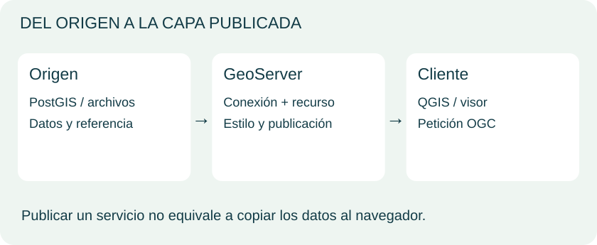
Una infraestructura de datos espaciales (IDE) reúne datos, servicios, metadatos y acuerdos para que la información se pueda encontrar y utilizar. El geoportal es una puerta de acceso; un servidor de mapas es una de sus piezas.
GeoServer recibe peticiones, accede a un origen y prepara una respuesta geográfica. QGIS y un visor web pueden consumir el mismo servicio. La base de datos conserva las entidades; el servicio define cómo se accede a ellas.
| Componente | Responsabilidad |
|---|---|
| PostGIS o archivos | Conservar geometrías, atributos o celdas |
| GeoServer | Publicar servicios y aplicar configuración |
| Cliente | Solicitar y representar el resultado |
| Catálogo | Facilitar la búsqueda mediante metadatos |
HTTP admite imágenes, XML y otros contenidos: no se limita a páginas HTML.
Referencia: GeoServer · organización de datos.
2. Workspace, store, layer y style
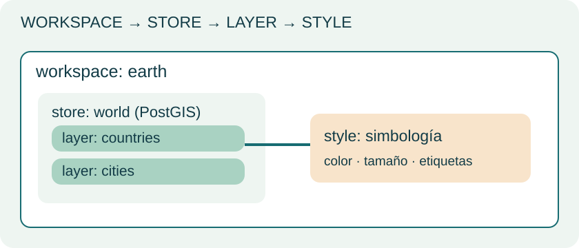
El workspace agrupa recursos de un proyecto. El store describe una conexión a un origen. La layer publica un recurso concreto y el style indica cómo dibujarlo. Un almacén PostGIS puede ofrecer varias tablas como capas.
En la práctica se utiliza el espacio earth y la base world. El nombre earth:countries distingue la capa de su espacio de trabajo.
Un layer group combina capas en un orden de dibujo. Comprueba fondo, transparencia y límites. El directorio de datos conserva la configuración; los binarios y los datos del proyecto tienen ciclos de mantenimiento distintos.
Referencia: GeoServer · organización de datos.
3. Elegir el servicio OGC
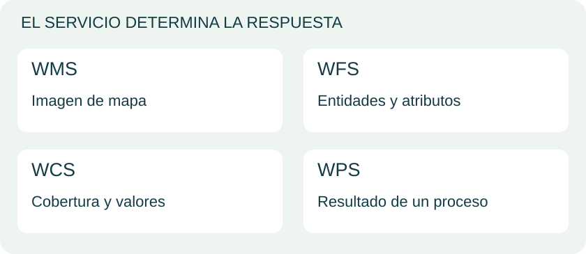
Para elegir un servicio, empieza por el resultado que necesitas.
| Servicio | Resultado típico | Operaciones de las clases |
|---|---|---|
| WMS | Representación cartográfica | GetCapabilities, GetMap, GetFeatureInfo |
| WFS | Entidades y atributos | GetCapabilities, DescribeFeatureType, GetFeature |
| WCS | Cobertura con valores | GetCapabilities, DescribeCoverage, GetCoverage |
| WPS | Resultado de un proceso | GetCapabilities, DescribeProcess, Execute |
GetCapabilities anuncia las capacidades del servicio. WMS puede permitir consultar una posición; eso no sustituye el acceso a entidades de WFS. WCS conserva el sentido de los valores de una cobertura, mientras una imagen puede representarlos mediante colores. SLD describe estilos; no es otro servicio de descarga.
Referencia: OGC · WMS · OGC · WFS.
4. Leer una petición de mapa
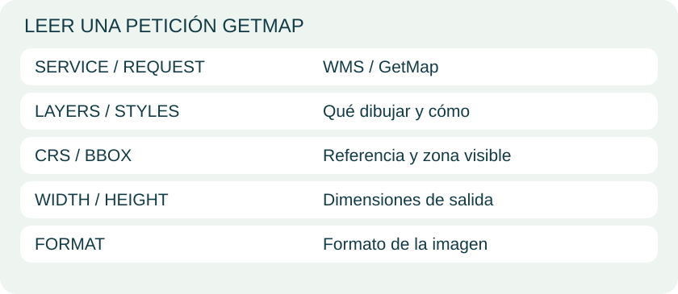
La URL combina un punto de acceso con parámetros. Capa, estilo, referencia, encuadre y tamaño determinan qué se dibuja. Una petición debe respetar la versión y los valores anunciados por el servidor.
El orden de ejes importa: no reutilices una BBOX sin revisar versión y CRS. En WMS 1.3.0, el orden depende de la definición del CRS. Si una capa no aparece, revisa referencia, encuadre, nombre y respuesta del servidor.
El servidor puede reproyectar al vuelo cuando su configuración lo permite, sin modificar necesariamente los datos almacenados. La práctica conecta los servicios con QGIS antes de consumirlos en un visor.
Referencia: OGC · WMS.
5. Simbología, etiquetas y escala
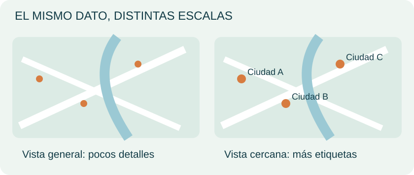
El estilo convierte atributos y geometrías en símbolos. Sus reglas controlan color, tamaño, grosor, etiquetas y visibilidad por escala. GeoServer trabaja con SLD y puede incorporar estilos CSS mediante una extensión, como en el curso.
| Geometría | Revisa |
|---|---|
| Puntos | Tamaño y solapamiento |
| Líneas | Grosor y etiquetas |
| Polígonos | Relleno y transparencia |
| Grupos | Orden y extensión |
Una vista general necesita menos detalle que una cercana. Las comparaciones de versiones del PDF describen el contexto de las clases; revisa la compatibilidad para la versión instalada.
Referencia: GeoServer · organización de datos.
6. Preparar archivos y herramientas
Necesitas QGIS, la base world de la Unidad 2 y las capas countries, cities y rivers. Conserva también relieve.tiff, hotdogs.gpkg y la carpeta Estilos del paquete original. El sitio no distribuye ese paquete: utiliza la copia del curso que tienes localmente o recupérala de su plataforma.
Instalar y abrir GeoServer
- Selecciona la distribución de GeoServer correspondiente al entorno del curso y comprueba su versión de Java requerida. La práctica de 2025 utiliza una distribución binaria con JDK 17; no supongas que esa combinación sirve para cualquier versión posterior.
- Instala el JDK requerido y ejecuta
java -versionen una terminal nueva. ConfiguraJAVA_HOMEapuntando a la carpeta del JDK si el lanzador lo necesita. - Extrae la distribución completa. Identifica su directorio de datos, que contiene configuración, estilos y la carpeta
www; no lo confundas con la carpeta de binarios. - Inicia GeoServer con el lanzador de la distribución. Conserva abierta su consola mientras trabajas y revisa que no haya errores de Java o de puerto ocupado.
- Abre
http://localhost:8080/geoservere inicia sesión con las credenciales de tu instalación. Si elegiste otro puerto, úsalo también en QGIS y en los visores posteriores. - Las extensiones WPS y CSS del curso deben coincidir exactamente con la versión de GeoServer. Detén el servidor, instala cada extensión según su distribución y reinícialo. Comprueba que aparecen sus herramientas antes de continuar.
Comprueba: la página de administración responde y el servidor sigue ejecutándose. localhost siempre se refiere al equipo que abre la dirección: estos enlaces no publican tu servidor en Internet.
7. Publicar las capas originales
Conectar earth con world
- En Workspaces / Espacios de trabajo → Add new, crea
earth. Introduce un URI de identificación del espacio, por ejemplohttps://example.org/earth; este identificador no es la dirección del servicio. - En Stores / Almacenes → Add new → PostGIS, selecciona
earthy asigna un nombre al almacén. - Configura host
localhost, puerto PostgreSQL de tu instalación, baseworld, esquemapublicy tus credenciales. Guarda. - En la lista de recursos disponibles pulsa Publish para
countries. Comprueba el CRS nativo y declaraEPSG:4326solamente si corresponde a los datos. Calcula los límites nativos y los límites geográficos con los botones de la interfaz. - Guarda y abre Layer Preview. Localiza
earth:countriesy abre su vista OpenLayers. Repite la publicación concitiesyrivers.
Debes ver: países, ciudades y ríos publicados por separado. Si el almacén no conecta, revisa PostgreSQL; si conecta pero no aparece una tabla, revisa el esquema, sus permisos y su columna geométrica.
Añadir relieve y organizar el mapa
- Crea un almacén GeoTIFF en
earth, selecciona el archivo localrelieve.tiffy publica su cobertura. El servidor debe poder leer la ruta elegida. - Para el GeoPackage del curso, utiliza el almacén compatible con GeoPackage de tu instalación y publica la capa requerida por la actividad. Si ese tipo no aparece, revisa sus componentes y compatibilidad antes de seguir.
- Crea un Layer Group llamado
worldgroup. Añade las capas y ordénalas de fondo a primer plano: un relieve o un relleno opaco situado encima puede ocultar líneas y puntos. - Calcula sus límites, guarda y comprueba el grupo en Layer Preview.
Conectar QGIS a los servicios
- En QGIS abre Administrador de fuentes de datos → WMS/WMTS → Nuevo. Usa
http://localhost:8080/geoserver/earth/wmscomo URL y un nombre reconocible. - Conecta, selecciona la capa publicada y añádela. Comprueba el nombre con prefijo
earth:y acércate a su extensión. - Para WFS repite desde la pestaña WFS / OGC API - Features usando
http://localhost:8080/geoserver/earth/wfs. Abre la tabla de atributos de la capa añadida. - Para WCS utiliza la pestaña correspondiente y
http://localhost:8080/geoserver/earth/wcs; elige la cobertura de relieve publicada. - Las primeras actividades usan servicios externos del PDF. Copia su dirección del contexto de cada actividad y consulta las capas que el servidor anuncie; si el servicio no responde, distingue esa indisponibilidad de un fallo de tu instalación local.
Comprueba: WMS muestra una representación; WFS permite examinar entidades y atributos; WCS entrega la cobertura. Las respuestas disponibles dependen de qué servicios y capas habilitaste.
Estilos, etiquetas y consultas
- En Styles, crea o carga el estilo del material original. Selecciona su formato real: un archivo CSS de GeoServer no es una hoja de estilos HTML.
- Valida el estilo antes de guardarlo. En Layers → capa → Publishing, asígnalo como estilo predeterminado o disponible.
- Comprueba el atributo de la etiqueta en la tabla original. Revisa la capa en varias escalas para verificar tamaño, visibilidad y solapamiento.
- Para inspeccionar un servicio abre su
GetCapabilities. Por ejemplo, añade?service=WMS&request=GetCapabilitiesa la URL WMS anterior. La respuesta debe ser un documento de capacidades, no la página de inicio de administración. - Usa la petición generada por la previsualización como punto de partida para interpretar capa, CRS, BBOX y formato. Revisa la respuesta del servidor si aparece un mensaje de excepción.
| Problema | Comprobación |
|---|---|
| No abre GeoServer | Consola de arranque, Java y puerto |
| No hay capas para publicar | Conexión a world, esquema public y permisos |
| Vista en blanco | Límites, CRS, estilo y orden del grupo |
| Falta CSS o WPS | Extensión de la misma versión y reinicio |
| QGIS no conecta | URL del servicio, servidor iniciado y respuesta de capacidades |
Conserva earth, las capas y worldgroup: son la entrada de la Unidad 4 y de los visores posteriores.
Fuentes: secuencia y nombres de la práctica original de MappingGIS. Ampliación: GeoServer · instalación y compatibilidad y administración de datos.
Material y referencias
Ampliación técnica: Organización de datos en GeoServer · OGC WMS · OGC WFS. Las versiones e interfaces del PDF corresponden al entorno de las clases; los diagramas muestran conceptos.
Antes de resolver las actividades
Completa la preparación y los procedimientos anteriores. Después avanza por los ejercicios en su orden original: varias actividades utilizan archivos, capas o cambios de las anteriores. Cada actividad conserva su enunciado y sus paneles de instrucciones y capturas dentro de la página; el PDF queda como respaldo.
Si una consigna menciona «el código anterior» o «la imagen anterior», abre su panel de contexto antes de trabajar. Comprueba qué archivo o recurso debes modificar, guarda el cambio y verifica el resultado antes de tomar la captura. No ejecutes de nuevo una creación o importación si ya existe el objeto correspondiente.
Ejercicio Unidad 3
Enunciados y contexto de los PDF de MappingGIS. No se añaden actividades ni soluciones. Los paneles incluyen los pasos originales dentro de la unidad; el PDF conserva la maquetación completa.
Conexiones QGIS: PDF original completo.
Ejercicio 1 · WMS en QGIS
Haz una captura de pantalla en la que se aprecie el servicio WMS cargado en la interfaz y pégala en la Plantilla de Resultados.
Pasos y contexto originales de la clase
Página 3
Ejercicio 3. Protocolos OGC
3
Conexiones Web Map Service (WMS)
WMS son las siglas de Web Map Service, se trata de un servicio y no de una página
web por lo que es necesario emplear un software SIG para poder visualizarlo.
Se trata de un estándar internacional que define un mapa como la representación
de la información geográfica en forma de un archivo d e imagen digital, siendo el
formato más común PNG, GIF o JPEG. Pueden ser invocados desde cualquier
plataforma corporativa o software capacitado para la visualización de éstos
servicios.
El estándar define tres operaciones:
GetCapabilities permite devolver los metadatos del nivel de servicio.
GetMap devuelve un mapa con parámetros geográficos y dimensionales
bien definidos.
GetFeatureInfo devuelve información de características particulares
mostradas en el mapa.
Nota: Puede que en ocasiones el servicio WMS se encuentre inoperativo debido a
un error en el servidor o bien a labores de actualización. En caso de no poder
conectar al mismo, podrás acceder a multitud de servicios WMS para realizar el
ejercicio en la página oficial de Infraestructuras de Datos Espaciales de España (IDEE)
del Ministerio de Fomento en el siguiente link:
http://www.idee.es/web/guest/directorio-de-servicios
Para llevar a cabo el ejercicio debemos:
1. Abre un nuevo proyecto en QGIS.
2. Puedes escoger entre dos maneras de añadir una capa WMS. A través del
menú Capa/Añadir Capa WMS/WMTS , o bien, haciendo click sobre Añadir
Capa WMS/WMTS de la barra de herramientas Administrar Capas…..
Una vez hecho esto aparecerá el cuadro de diálogo correspondiente.
Página 4
Ejercicio 3. Protocolos OGC
4
3. Una vez abierto, presionamos el botón Nuevo para crear una nueva
conexión WMS, en la interfaz aparecerá una nueva ventana en la que se nos
requiere los parámetros para la conexión.
Página 5
Ejercicio 3. Protocolos OGC
5
4. Introducimos los siguientes parámetros:
- Nombre: PNOA.
- URL: Ruta para el acceso al servicio WMS. Esta ruta generalmente está
publicada por los generadores del servicio.
Copia la siguiente ruta:
http://www.ign.es/wms-inspire/pnoa-ma?
5. Presionamos sobre el botón OK y la nueva conexión WMS quedará
guardada automáticamente.
6. Haz clic sobre el botón Conectar, tras seleccionar la conexión recién creada,
y aparecerán en la ventana la información disponible para su visualización.
Página 6
Ejercicio 3. Protocolos OGC
6
7. Para cargar en la interfaz cualquiera de las capas, simplemente selecciona
la misma entre las disponibles y presiona el botón Añadir. Tras unos
segundos aparecerá en la Tabla de Contenidos la capa seleccionada, haz clic
en Cerrar para salir de la ventana de carga de datos.
Ejercicio nº 1. Haz una captura de pantalla en la que se aprecie el servicio WMS
cargado en la interfaz y pégala en la Plantilla de Resultados.
Ver página 6 del PDF original, con sus capturas
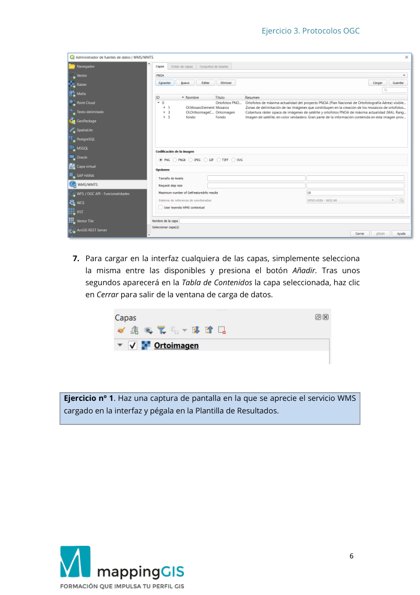
Consultar en el PDF · página 6
Ejercicio 2 · WFS en QGIS
Haz una captura de pantalla de programa en la cual se aprecien las capas cargadas y pégala en la Plantilla de Resultados.
Pasos y contexto originales de la clase
Página 6
Ejercicio 3. Protocolos OGC
6
7. Para cargar en la interfaz cualquiera de las capas, simplemente selecciona
la misma entre las disponibles y presiona el botón Añadir. Tras unos
segundos aparecerá en la Tabla de Contenidos la capa seleccionada, haz clic
en Cerrar para salir de la ventana de carga de datos.
Ejercicio nº 1. Haz una captura de pantalla en la que se aprecie el servicio WMS
cargado en la interfaz y pégala en la Plantilla de Resultados.
Página 7
Ejercicio 3. Protocolos OGC
7
Conexiones Web Feature Service (WFS)
El uso de los datos provenientes de servicios Web Feature Services (WFS) en QGIS es
relativamente sencillo.
Para ejecutar dicho servicio en QGIS vamos a seguir los siguientes pasos:
1. Abre un nuevo proyecto en QGIS.
2. Existen dos formas para incluir una ca pa WFS. La primera de ellas es
utilizando el menú Capa/Añadir Capa WFS. La otra opción es utilizar el botón
Añadir capa WFS . Después de utilizar cualquiera de las dos opciones
anteriores, aparecerá el siguiente cuadro de diálogo.
3. En la ventana Añadir capa WFS desde un servidor , si es l a primera vez que
accedemos a lo s datos de un servicio WFS, hacemos clic sobre el botón
Nuevo, con el fin de crear una nueva conexión a un servicio WFS.
4. En la ventana Crear una nueva conexión WFS , digitalizamos los siguientes
parámetros:
- Nombre: Digitalizamos aquí el nombre arbitrario con el que se
denominará a la conexión. En nuestro caso la denominamos Riesgos
Naturales en la Comunidad de Andalucía.
Página 8
Ejercicio 3. Protocolos OGC
8
- URL: Ruta para el acceso al servicio WFS. Esta ruta generalmente está
publicada por los generadores del servicio.
Copia la siguiente ruta:
http://www.juntadeandalucia.es/medioambiente/mapwms/REDIAM_WFS_riesgos_naturales?
En algunos casos es necesario ingresar los datos de autentificación, en tal
caso, éstos se digitalizan en los campos Nombre de usuario y Contraseña. En
nuestro caso, deja éstos campos vacíos.
5. Finalmente, presionamos sobre el botón OK. De esta forma, hemos creado
una conexión a un servicio WFS.
Como podemos apreciar la conexión aparece disponible en el desplegable
de la ventana Añadir capa WFS desde un servidor.
Página 9
Ejercicio 3. Protocolos OGC
9
6. Haz clic sobre el botón Conectar y aparecerán en la ventana las capas
disponibles en este servicio.
7. Finalmente, para cargar una capa, únicamente es necesario seleccionarla
en la columna Cache Features y pulsar sobre Añadir.
El programa presentará una ventana en la que se informa del proceso de
carga de las capas seleccionadas.
Una vez finalizado el proceso aparecerá gráficamente en pantalla así como
en la Tabla de Contenidos (ToC) las capas cargadas.
Página 10
Ejercicio 3. Protocolos OGC
10
Ejercicio nº 2 . Haz una captura de pantalla de programa en la cual se aprecien
las capas cargadas y pégala en la Plantilla de Resultados.
Para extraer información del servicio WFS cargado se puede utilizar la herramienta
Identificar objetos espaciales , selecciona un elemento en pantalla y en la
ventana del Identificador aparecerá su información relacionada.
Ver página 10 del PDF original, con sus capturas
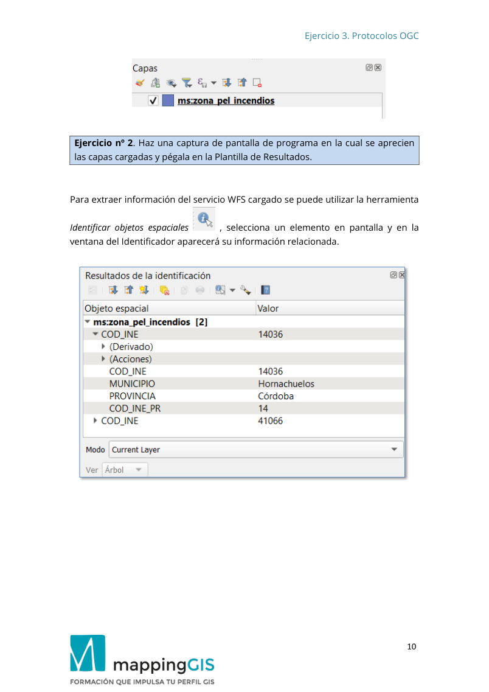
Consultar en el PDF · página 10
Ejercicio 3 · WCS en QGIS
Haz una captura de pantalla de programa en la cual se aprecien las capas cargadas y pégala en la Plantilla de Resultados.
Pasos y contexto originales de la clase
Página 10
Ejercicio 3. Protocolos OGC
10
Ejercicio nº 2 . Haz una captura de pantalla de programa en la cual se aprecien
las capas cargadas y pégala en la Plantilla de Resultados.
Para extraer información del servicio WFS cargado se puede utilizar la herramienta
Identificar objetos espaciales , selecciona un elemento en pantalla y en la
ventana del Identificador aparecerá su información relacionada.
Página 11
Ejercicio 3. Protocolos OGC
11
Conexiones OGC API
OGC API es un Nuevo estándar que aún está en desarrollo. Supone una evolución
del WFS, de tal forma que se puede acceder a los datos de una página en formato
web, ya que utiliza HTML y opcionalmente JSON.
Las OGC API utilizan un enfoque moderno que sigue la arquitectura web
actual y, en particular, las mejores prácticas del W3C/OGC para compartir
datos espaciales en la web. La idea de utilizar tecnologías API hace que la
exploración de datos sea más amigable tanto para el navegador web como
para el desarrollador web.
Para acceder a la API se utilizan unos “ puntos finales ” que se incorporan
en la url del recurso. El punto final genérico de acceso a la página es / y se
conoce como Landing page.
Para ver un ejemplo podemos accede r al servicio OGC API del Instituto
Geográfico Nacional de España.
https://api-features.ign.es/
En ésta página de inicio podemos ver información sobre el Proyecto como el
Proveedor y sus datos de contacto , los términos del servicio y la licencia.
También podemos elegir el forma to entre HTML y JSON. HTML es el lenguaje
habitual de las páginas web y JSON es un lenguaje muy utilizado por los
Página 12
Ejercicio 3. Protocolos OGC
12
desarrolladores web porque es eficiente y se adapta bien al manejo de los datos
por los navegadores.
Desde esta página de inicio podemos acceder también a los principales elementos
de una OGC API.
Conformance declaration . La conformidad identifica las especificaciones
que cumplen los enlaces del recurso.
API definition . La definición de API describe los métodos y recursos
soportados por el servicio.
Collections. Las colecciones se refieren a los datos propiamente dichos.
Haz clic en el enlace de las colecciones.
Verás en la url que el punto final es /collections y el formato es html (f=html)
Las colecciones que sirve el IGN como OGC API son las indicadas en la página.
Página 13
Ejercicio 3. Protocolos OGC
13
A partir de aquí puedes navegar por las páginas para ver los datos. Por ejemplo ,
desde la colección Unidades Administrativas puedes llegar a ver los datos de los
municipios
Como puedes observar los datos se pueden consultar desde un mapa o desde una
tabla.
Página 14
Ejercicio 3. Protocolos OGC
14
Estos datos pueden ser consumidos desde GIS de escrito rio como QGIS o desde
librerías JavaScript como Leaflet u OpenLayers.
OGC API en QGIS
Podemos añadir los datos OGC API en QGIS del mismo modo que las conexiones a
los servicios WFS.
La opción de OGC API en QGIS se encuentra en la misma ubicación que el servicio
WFS. Haz clic en el botón “Nuevo” para crear una nueva conexión.
En la ventana que se abre debemos definir un nombre y una url con el servicio.
Nombre: IGN OGC API
URL: https://api-features.ign.es/
Escribimos la dirección de la página de inicio que vimos antes para el servicio OGC
API del Instituto Geográfico Nacional.
Página 15
Ejercicio 3. Protocolos OGC
15
Cuando lo tengas haz clic en Aceptar.
Una vez creado el servicio en QGIS haz clic en “Conectar”. Se muestran las
colecciones que forman este servicio.
Página 16
Ejercicio 3. Protocolos OGC
16
Puedes seleccionar la colección de datos que desees, pero como contienen
muchos datos, puede tardar un tiempo en descargarlo, por ese motivo, para que
puedas probar el servicio sin dificultad te aconsej amos que veas la colección: Red
de Estaciones de Referencia (ERGNSS) porque es más ligera.
Cuando lo tengas haz clic en “Añadir” para incorporar la capa a la vista de QGIS.
Página 17
Ejercicio 3. Protocolos OGC
17
Conexiones Web Coverage Service (WCS)
El servicio WCS o Web Coverage Service proporciona información ráster con su
semántica original, es decir, permite el acceso no sólo a la imagen en sí (tal y como
sucede con el servicio WMS), sino también a los valores o propiedades de la misma
(como por ejemplo valores de altitud de un MDE o Modelo Digital de Elevaciones).
La especificación OGC para los servicios WCS define las siguientes operaciones:
GetCapabilities. Metadatos del servicio y de las coberturas que ofrece.
DescribeCoverage. Descripción detallada de una o varias coberturas.
GetCoverage. Obtener una cobertura o parte de ella.
Nota: Dependiendo del pc o de la conexión a internet, desde donde accedamos,
es posible que ésta tarde unos minutos o que incluso el pc se bloquee, debido al
gran volumen de datos de consulta, por ello el éxito de la ejecución del ejercicio
no está garantizado.
Para realizar una conexión a un servicio WCS desde QGIS hemos de seguir los
siguientes pasos:
1. Abre un nuevo proyecto en QGIS.
2. Al igual que en los dos casos anteriores existen dos formas de iniciar el
proceso. E n primer lugar, mediante el menú Capa/Añadir capa WCS o, en
segundo lugar, seleccionando el botón Agregar capa WCS de la barra
de herramientas Administrar capas. Una vez seleccionada cualquiera de las
dos anteriores opciones aparecerá el siguiente cuadro de diálogo.
Página 18
Ejercicio 3. Protocolos OGC
18
3. Vamos a conectarnos al servicio WCS de la Red de Información Ambiental
de Andalucía (REDIAM) para tener acceso a los Modelos Meteorológicos
para su uso en sistemas de pre -alerta hidrometeorológica en
Andalucía.
4. Haz click sobre el botón Nuevo para crear una nueva conexión a un servicio
WCS e introduce los siguientes parámetros:
- Nombre: Modelos Meteorológicos REDIAM
- URL: Copia la siguiente ruta:
http://www.juntadeandalucia.es/medioambiente/mapwms/REDIAM_WCS_modelos_meteorologicos_prealertas?
Página 19
Ejercicio 3. Protocolos OGC
19
5. Finalmente, presionamos el botón OK y la conexión WCS quedará guardada.
Si accedemos al desplegable ésta aparecerá disponible.
6. Haz clic sobre el botón Conectar y aparecerá la cobertura disponible para su
consulta.
Página 20
Ejercicio 3. Protocolos OGC
20
7. Señala la cobertura en la ventana y pulsa el botón Añadir para cargarla en la
interfaz de QGIS.
Puedes emplear el botón Cambiar… para escoger el Sistema de
Coordenadas en el que desees trabajar.
¿No te funciona este WCS? Puedes probar con un WCS de tu elección o probar con:
https://geoservicios.cantabria.es/inspire/services/MDT/MapServer/WCSServer
Ejercicio nº 3 . Haz una captura de pantalla de programa en la cual se
aprecien las capas cargadas y pégala en la Plantilla de Resultados.
Ver página 20 del PDF original, con sus capturas
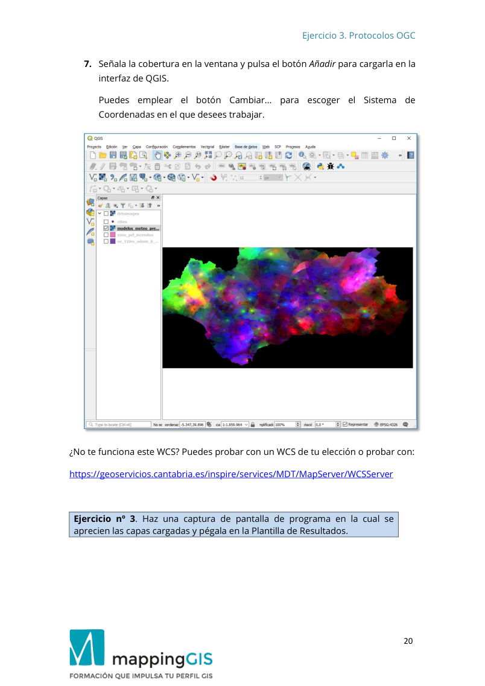
Consultar en el PDF · página 20
GeoServer: PDF original completo.
Ejercicio 4 · Extensión WPS
Adjunta una captura de pantalla como la anterior mostrando la el enlace “Generador de consultas WPS”.
Pasos y contexto originales de la clase
Página 3
Ejercicios 3.1 GeoServer
3
La petición WFS GetFeature .......................................................................................... 42
La petición WFS GetCapabilities ................................................................................... 42
Visualización de nuestros servicios WMS y WFS en un cliente SIG ...................... 43
Visualización de nuestro servicio WCS en un cliente SIG ....................................... 43
Servicio de Procesamiento Web (WPS) ....................................................................... 44
Otros Formatos de datos soportados ............................................................................ 48
Carga de datos desde un archivo Geopackage ........................................................ 49
Creación de un grupo de capas ....................................................................................... 51
Estilos ..................................................................................................................................... 54
Estructura de un SLD ...................................................................................................... 54
Cargando estilos .............................................................................................................. 55
Estilos CSS en GeoServer ................................................................................................... 59
Creando un estilo en una capa de puntos ................................................................ 60
La sintaxis de CSS ............................................................................................................ 62
Símbolos ............................................................................................................................ 63
Selectores de símbolos .................................................................................................. 63
CSS Cookbook .................................................................................................................. 66
Filtros en GeoServer ........................................................................................................... 66
Proporcionando metadatos .......................................................................................... 69
Estilos basados en escalas ................................................................................................ 71
Las teselas vectoriales y su creación con GeoServer ...................................................... 72
Generación de teselas vectoriales con GeoServer ...................................................... 73
Formatos de las teselas vectoriales ................................................................................ 74
Publicación de teselas vectoriales con GeoWebCache ............................................... 74
Página 4
Ejercicios 3.1 GeoServer
4
Instalación de GeoServer sobre Windows
Instalación
Vamos a realizar la instalación de GeoServer utilizando los archivos binarios que
son independientes de la plataforma que se utilice. Esta versión es una aplicación
web de GeoServer construida dentro de Jetty (Jetty es un servidor de aplicaciones
ligero y portátil ). Esto tiene la ventaja de trabajar de forma similar en cualquier
sistema operativo y es muy sencillo de configurar.
GeoServer requiere la instalación de un entorno JDK 17 en su sistema, disponible
en los instaladores de OpenJDK, Adoptium. Esto debe hacerse antes de la
instalación.
Actualizar Java
En primer lugar, debemos asegura rnos de que tenemos instalado J DK en el
sistema. Las versiones recientes de GeoServer, concretamente a partir de la
versión 2.25 , requieren de un entorno JDK 17. Hay otras versiones de JDK más
recientes pero no te recomendamos que las utilices con Geoserve r, porque
pueden dar algunos problemas.
Si ya tienes instalado JDK 17 puedes saltarte este paso, en caso contrario
procederemos a instalarlo. Una forma sencilla de instalar JDK 17 es mediante
https://adoptium.net/es/
Página 5
Ejercicios 3.1 GeoServer
5
Nos dirigimos a la página de Adoptium y buscamos el botón “Otras descargas”.
En la ventana que se abre nos permite elegir la versión de Java según nuestro
sistema operativo. Como verás está disponible para los principales sistemas
operativos: Windows. Linux, Mac
Elegimos JDK 17-LTS y nuestro sistema operativo.
Haz clic en el botón de descargas. Se descargará el archivo correspondiente.
Abrimos el archivo y da comienzo a la instalación:
Página 6
Ejercicios 3.1 GeoServer
6
Haz clic en Siguiente.
Nos muestra la licencia.
Acepta los términos de la licencia. Haz clic en Siguiente.
Página 7
Ejercicios 3.1 GeoServer
7
A continuación veremos una ventana para personalizar la instalación, deja los
valores por defecto.
Nos va a indicar el lugar (carpeta) donde nos hace la instalación. Puedes
seleccionar una diferente aunque recomendamos que dejes la que indica por
defecto.
Página 8
Ejercicios 3.1 GeoServer
8
En la ventana siguiente confirmamos la instalación. Clic en Instalar.
Cuando termine la instalación veremos la ventana de instalación completada.
Haremos clic en finalizar.
Página 9
Ejercicios 3.1 GeoServer
9
Si hemos seguido estas indicaciones nos encontraremos con una carpeta con
la versión jdk en el directorio Archivos de programa>> Eclipse Adoptium
Instalar GeoServer
Ahora que ya tenemos Java en una versión apta para GeoServer podemos
comenzar con su instalación:
1. Ve a la página de descargas de GeoServer: http://geoserver.org/download/
2. Seleccionamos la versión estable de GeoServer.
3. Seleccionamos Platform Independent Binary.
Página 10
Ejercicios 3.1 GeoServer
10
4. Se realizará la conexión a l a página web de sourceforge.net y comenzará la
descarga. Al finalizar tendremos un archivo de tipo bin comprimido.
5. Descomprimimos en el directorio raíz del equipo: (p. ej C:\Geoserver
2.28.0).
Establecer las variables de entorno
Página 11
Ejercicios 3.1 GeoServer
11
Necesitamos establecer la variable de entorno JAVA_HOME si aún no está
configurada. Esta es la ruta a nuestro JRE de modo que la ruta
%JAVA_HOME%\bin\java.exe exista.
Para crear variables de entorno debemos ir al Panel de control > Sistema >
Configuración avanzada del sistema:
Clic sobre el botón Variables de entorno…
Y en Variables del sistema, hacemos clic en el botón Nueva…
Página 12
Ejercicios 3.1 GeoServer
12
Para Nombre de variable, ingresaremos JAVA_HOME:
Para e stablecer e l campo Valor de la variable , debemos ir a Examinar
directorio… y na vegaremos por el árbol de directorios para localizar la ruta a
nuestro directorio JDK / JRE:
Página 13
Ejercicios 3.1 GeoServer
13
Aceptamos.
Y aceptamos tres veces más.
También establecer emos la variable GEOSERVER_HOME, que es el directorio
donde está instalado GeoServer.
Directorio de datos de GeoServer
Durante la instalación, GeoServer crea un directorio de datos en el mismo
directorio de instalación. El riesgo de dejar el directorio de datos en la ubicación
por defecto radica en que en el momento de desinstalar GeoServer para rea lizar
una actualización, se eliminará el directorio completo de GeoServer y, por
tanto, el directorio de los Datos con toda nuestra información.
Por lo tanto, antes de proceder con una actualización o reinstalación de
GeoServer, el primer paso que debemos realizar será hacer una copia de la
carpeta data_dir y pegarla en la raíz C:/
Página 14
Ejercicios 3.1 GeoServer
14
La creación de un directorio de datos en una ubicación separada nos garantiza la
independencia de datos y del directorio de instalación.
La carpeta data_dir de GeoServer es el corazón de la configuración y los datos
de GeoServer . Contiene toda la información necesaria para que GeoServer
funcione: configuración, estilos, datos de usuario, logs, etc.
La variable GEOSERVER_DATA_DIR, hace referencia a la ubicación del directorio de
datos de GeoServer (que por defecto es %GEOSERVER_HOME\data_dir). Est a
variable es obligatori a si desea mos utilizar un directorio de datos que no sea la
ubicación predeterminada.
El procedimiento para configurar estas variables es idéntico al de la variable
JAVA_HOME.
Nota
Una vez que hayamos definido la variable de entorno apuntando a la carpeta
data_dir de la unidad C:, esta será nuestra carpeta de datos y es por tanto la que
utilizaremos en adelante . NO confundir con la carpeta data_dir del d irectorio de
GeoServer.
Página 15
Ejercicios 3.1 GeoServer
15
Ejecución de GeoServer
Navegaremos hasta dentro del directorio bin donde hemos instalado GeoServer.
Y ejecutamos el archivo startup.bat
Aparecerá y se mantendrá una ventana de línea de comandos. Esta ventana
contiene información de diagnóstico y solución de problemas. Esta ventana debe
dejarse abierta durante la ejecución de GeoServer , si cerramos la ventana,
GeoServer no se ejecutará.
Ahora abrimos nuestro na vegador de internet (te sugerimos utilizar Google
Chrome) y vamos a http://localhost:8080/geoserver para acceder a la interfaz de
administración web de GeoServer.
Si ve mos el logotipo de GeoServer, ¡enhorabuena! GeoServer se ha instalado
correctamente.
Página 16
Ejercicios 3.1 GeoServer
16
Introducimos el n ombre de usuario y la contraseña para la administración de
GeoServer. Los valores predeterminados son admin / geoserver. Utilizaremos
estos valores durante el curso, por lo que te recomendamos encarecidamente no
modificarlos durante el curso.
Detener GeoServer
Para cerrar GeoServer, debemos cerrar la ventana de línea de comandos
persistente o ejecutar el archivo shutdown.bat ubicado dentro del directorio bin.
Desinstalar o actualizar GeoServer
1. Detener GeoServer (si se está ejecutando).
2. Eliminar el directorio donde está instalado GeoServer.
3. Copiar el nuevo directorio de GeoServer con los nuevos archivos binarios.
Cambiar el puerto en el que se ejecuta GeoServer
GeoServer se ejecuta por defecto en el puerto 8080. En el caso ( y solo en el caso)
de que tengas este puerto ocupado por otra aplicación, puedes modificarlo a otro
puerto.
Lo que debe s hacer es detener GeoServer y editar el archivo start.ini que se
localiza en C:\Geoserver 2.28.0
Página 17
Ejercicios 3.1 GeoServer
17
Y editar la línea 144 que dice:
jetty.port=8080
Cambiar a
jetty.port=8585
E iniciar GeoServer, ejecutando el archivo startup.bat
Página 18
Ejercicios 3.1 GeoServer
18
Descarga e instalación de extensiones en GeoServer
GeoServer, por defecto, incluye varias funcionalidades, pero para ampliar su
potencial es posible utilizar complementos. P ara utilizar estos complementos, es
necesario descargar e instalarlos manualmente. Veamos cómo hacerlo.
La extensión CSS
Para trabajar con CSS en GeoServer es necesario instalar la extensión disponible
desde la página de descargas de GeoServer: https://geoserver.org/release/stable/
Nos descargaremos el archivo acorde a nuestra versión de GeoServer . Si l a
versión de GeoServer utilizada es la versión 2.28.0 entonces el archivo deberá ser
geoserver-2.28.0-css-plugin.zip
Abre el archivo zip para ver los archivos:
Página 19
Ejercicios 3.1 GeoServer
19
Extrae su contenido en el directorio de GeoServer:
C:\Geoserver 2.28.0\webapps\geoserver\WEB-INF\lib
Si nos pregunta, debemos proporcionar permisos de administrador y marcar la
casilla “Hacer esto para todos los elementos”.
Instalación de la extensión Vector Tiles
Repetiremos la operación con el complemento que genera teselas vectoriales.
Volvemos a la página de descargas de GeoServer :
https://geoserver.org/release/stable/ y en el apartado Output Formats
seleccionamos Vector Tiles:
Página 20
Ejercicios 3.1 GeoServer
20
https://sourceforge.net/projects/geoserver/files/GeoServer/2.28.0/extensions/geoserver-
2.28.0-vectortiles-plugin.zip/download
Y copiamos los archivos .jar en el mismo directorio que antes:
C:\Geoserver 2.28.2\webapps\geoserver\WEB-INF\lib
Instalación de la extensión WPS
Repetiremos la operación con el complemento que permite realizar
geoprocesamiento.
Volvemos a la página de descargas de GeoServer :
https://geoserver.org/release/stable/
y en el apartado Services seleccionamos WPS:
https://sourceforge.net/projects/geoserver/files/GeoServer/2.28.0/extensions/geoserver-
2.28.0-wps-plugin.zip/download
Como en las dos ocasi ones anteriores, copiamos los archivos .jar al directorio
C:\Geoserver 2.28.0\webapps\geoserver\WEB-INF\lib
Página 21
Ejercicios 3.1 GeoServer
21
Para completar la instalación de las extensiones debemos reiniciar el equipo. De
este modo los servicios se iniciarán de forma automática.
Después de reiniciar, esperamos un par de minutos y accedemos a la interfaz de
administración de GeoServer.
Nota
Desde ahora y hasta finalizar el curso debes utilizar un navegador web moderno.
Te recomendamos utilizar Chrome, Firefox o Safari.
La url por defecto de la interfaz de GeoServer es:
http://localhost:8080/geoserver
Para verificar que las extension es se han instalado , sin loguearte, ve al apartado
Demos, en él deberías ver una entrada denominada Generador de consultas WPS:
Ejercicio nº4. Adjunta una captura de pantalla como la anterior mostrando la el
enlace “Generador de consultas WPS”.
Ver página 21 del PDF original, con sus capturas
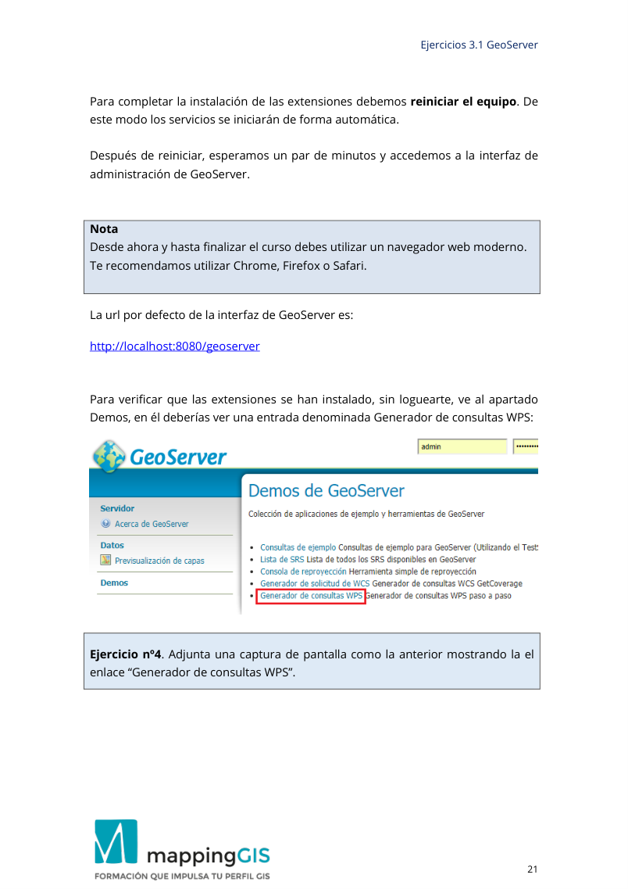
Consultar en el PDF · página 21
Ejercicio 5 · Página web en GeoServer
Haz una captura de pantalla el contenido de la url http://localhost:8080/geoserver/www/web.html en blanco, sin errores.
Pasos y contexto originales de la clase
Página 21
Ejercicios 3.1 GeoServer
21
Para completar la instalación de las extensiones debemos reiniciar el equipo. De
este modo los servicios se iniciarán de forma automática.
Después de reiniciar, esperamos un par de minutos y accedemos a la interfaz de
administración de GeoServer.
Nota
Desde ahora y hasta finalizar el curso debes utilizar un navegador web moderno.
Te recomendamos utilizar Chrome, Firefox o Safari.
La url por defecto de la interfaz de GeoServer es:
http://localhost:8080/geoserver
Para verificar que las extension es se han instalado , sin loguearte, ve al apartado
Demos, en él deberías ver una entrada denominada Generador de consultas WPS:
Ejercicio nº4. Adjunta una captura de pantalla como la anterior mostrando la el
enlace “Generador de consultas WPS”.
Página 22
Ejercicios 3.1 GeoServer
22
El directorio de datos www como servidor web
Para realizar determinados ejercicios del curso debemos utilizar el directorio www
ubicado dentro de C:\data_dir\
En esta ubicación guardaremos los archivos html que crearemos en el curso ,
que serán los que contendrán nuestros visores webmapping.
La carpeta www dentro del directo rio data_dir de GeoServer tiene la función de
servir contenido estático (como archivos HTML, imágenes, CSS, JavaScript, etc.)
directamente desde el servidor web embebido de GeoServer, dicho de otra forma;
el directorio www se utiliza para servir nuestras aplicaciones de mapas del lado del
cliente, permitiendo a GeoServer actuar como un servidor web.
El contenido de este directorio se sirve en http:/<host: puerto> /geoserver/www
Entra dentro del directorio www y crea un archivo nuevo con el nombre web.html
Puedes crear un nuevo documento de texto, del tipo "nuevo documento de texto
con extensión .txt" y luego modificar el nombre y la extensión.
Una vez modifiques la extensión a .html, se actualizará el icono del archivo.
Página 23
Ejercicios 3.1 GeoServer
23
Mostrar u ocultar extensiones de nombre de archivo
1. Para abrir Opciones de carpeta, haz clic en el botón Inicio
, en Panel de
control, en Apariencia y personalización y, por último, en Opciones de carpeta.
2. Clic en la ficha Ver y, a continuación, en Configuración avanzada, realiza una de
las acciones siguientes:
Para mostrar las extensiones de nombre de archivo, desactive la
casilla Ocultar las extensiones de archivo para tipos de archivo
conocidos y, a continuación, haga clic en Aceptar.
Para ocultar las extensiones de nombre de arch ivo, activa la
casilla Ocultar las extensiones de archivo para tipos de archivo
conocidos y, a continuación, haz clic en Aceptar.
Abre la web en tu navegador, ve a: http://localhost:8080/geoserver/www/web.html
Debe aparecer un a web el b lanco (el archivo html está vacío). Esto nos sirve para
verificar que el archivo está funcionando correctamente y que el servidor Jetty está
iniciado.
Ejercicio nº 5. Haz una captura de pantalla el contenido de la url
http://localhost:8080/geoserver/www/web.html en blanco, sin errores.
Ver página 23 del PDF original, con sus capturas
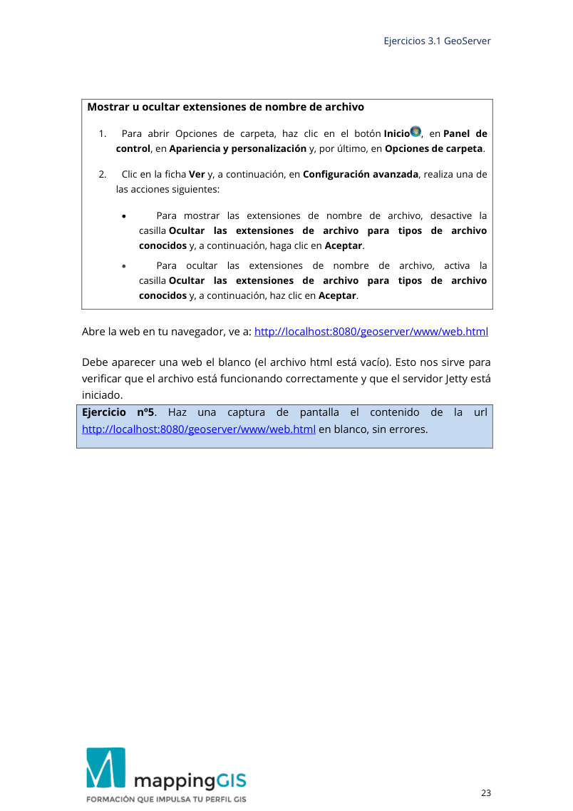
Consultar en el PDF · página 23
Ejercicio 6 · Publicar relieve
Haz una captura de pantalla con el resultado y pégala en la p lantilla de resultados.
Pasos y contexto originales de la clase
Página 23
Ejercicios 3.1 GeoServer
23
Mostrar u ocultar extensiones de nombre de archivo
1. Para abrir Opciones de carpeta, haz clic en el botón Inicio
, en Panel de
control, en Apariencia y personalización y, por último, en Opciones de carpeta.
2. Clic en la ficha Ver y, a continuación, en Configuración avanzada, realiza una de
las acciones siguientes:
Para mostrar las extensiones de nombre de archivo, desactive la
casilla Ocultar las extensiones de archivo para tipos de archivo
conocidos y, a continuación, haga clic en Aceptar.
Para ocultar las extensiones de nombre de arch ivo, activa la
casilla Ocultar las extensiones de archivo para tipos de archivo
conocidos y, a continuación, haz clic en Aceptar.
Abre la web en tu navegador, ve a: http://localhost:8080/geoserver/www/web.html
Debe aparecer un a web el b lanco (el archivo html está vacío). Esto nos sirve para
verificar que el archivo está funcionando correctamente y que el servidor Jetty está
iniciado.
Ejercicio nº 5. Haz una captura de pantalla el contenido de la url
http://localhost:8080/geoserver/www/web.html en blanco, sin errores.
Página 24
Ejercicios 3.1 GeoServer
24
Interfaz de GeoServer
GeoServer incluye una interfaz de administración Web a través de la que podemos
hacer la mayor p arte de las configuraciones de datos y servicios. Esta interfaz
reduce la necesidad de editar los archivos de configuración a mano.
Página de Bienvenida
Para acceder a la página de bienvenida accedemos a
http://localhost:8080/geoserver
Identificación
Para comenzar a trabajar con GeoServer es necesario identificarse.
Por defecto, las credenciales de administración de GeoServer son admin y
geoserver.
1. Identifícate con las credenciales predeterminadas.
Página 25
Ejercicios 3.1 GeoServer
25
2. Después de identificarte aparecen todos los menús disponibles.
Interfaz de administración Web
Los enlaces de la columna izquierda cargan páginas de administración para las
características específicas de GeoServer:
Servidor
Datos
Servicios
Settings
Cacheado de Teselas
Seguridad
Demos
Herramientas
Los vínculos en la parte central de la página principal nos llevan a los documentos
de capacidades de cada servicio (WFS, WMS, WCS, WPS, TMS, etc).
En este curso vamos a usar los enlaces situados a la izquierda: Datos (Espacios de
trabajo, Almacenes de datos, Capas, etc), Cacheado de Teselas y Seguridad.
Página 26
Ejercicios 3.1 GeoServer
26
Servidor
La sección Servidor proporciona acceso a la información del entorno GeoServer. Es
una combinación de herramientas de diagnóstico y de configuración, y puede ser
particularmente útil para la depuración.
La página de estado del servidor muestra un resumen de los parámetros de
configuración del servidor y tiempo de ejecución de estado.
Política de Seguridad de Contenido (CSP) en GeoServer
La página Content Se curity Policy controla cómo GeoServer prepara los
encabezados de respuesta HTTP de la Política de seguridad de contenido (CSP).
GeoServer en sus sucesivas versiones va ampliando las medidas de seguridad. En
algunas versiones de Goserver se ha activado por defecto "Habilitar encabezado
de política de seguridad de contenido ”, esto tiene como consecuencia que cuando
accedemos a recursos como Leaflet u OpenStreetMap mediante un enlace url (es
decir sin tenerlos descargados) se produzca un bloqueo. Como nosotros estamos
haciendo un trabajo de desarrollo y nos resulta más práctico trabajar con esas
librerías sin descargarlas vamos a comprobar que está deshabilitar la opción.
Página 27
Ejercicios 3.1 GeoServer
27
En el menú de GeoServer vamos a la sección de “Seguridad” y seleccionamos
“Content Security Policy”. En la ventana que s e abre comprobamos que est é
deshabilitada la opción “Enable Content-Security_policy header” y si no lo estuviese
la deshabilitamos. Por último, si fuese necesario, hacemos click en “Apply” para
aplicar los cambios y en “Save” para guardarlos.
Servicios
La sección de Servicios es para usuarios avanzados que necesiten configurar los
protocolos de solicitud utilizados por GeoServer.
La página Web Coverage Service (WCS) gestiona la información de metadatos,
común a las peticiones WCS, WFS y WMS.
La página Web Feature Service (WFS) permite la configuración de objetos
geográficos, niveles de servicio, y las salidas GML.
La página Web Map Service (WMS) establece las opciones de raster y SVG.
La página Web Processing Service (WPS) administra metadatos y los recursos para
WPS.
Página 28
Ejercicios 3.1 GeoServer
28
La página Web Map Tile Service (WMTS) establece la configuración de las teselas
WMS. Un WMTS es un estándar que sirve las teselas de mapa pre -renderizadas en
la web.
Datos
Los datos enlazan directamente a una página de tipo datos que nos permite
editar, agregar y eliminar funcionalidad es. Todos los tipos de da tos de las
subsecciones siguen un flujo de trabajo similar.
Como se ve en la imagen inferior (e l ejemplo de los estilos ), la página principal de
cada tipo de datos muestra un listado indexado con los datos, en este caso la lista
de estilos:
Previsualización de la capa
La página Previsualización de la capa (Layer Preview) ofrece vistas previas de capa
en varios formatos de salida, incluyendo los formatos OpenLayers, KML y GML .
Esta página ayuda a verificar visualmente y explorar la configuración de nuestras
capas.
1. Haz clic en el enlace Previsualización de la capa , situado en el lado
izquierdo bajo Datos.
Página 29
Ejercicios 3.1 GeoServer
29
Cada fila capa contiene un Tipo de geometría, un Título, un Nombre y los
formatos disponibles para su visualización.
La columna Tipo muestra un icono que indica el tipo de datos de la capa. El
Título muestra una breve descripción, mientras que el Nombre muestra el
espacio de trabajo y el nombre de la capa.
2. Previsualiza algunas capas haciendo clic en el enlace OpenLayers situado al
lado de cada capa.
Crear un espacio de trabajo
El primer paso para cargar datos es, generalmente, crear primero un espacio de
trabajo o workspace.
Página 30
Ejercicios 3.1 GeoServer
30
Se denomina workspace al contenedor usado para agrupar capas similares. Se ha
diseñado para ser un espacio separado y aislado, relacionado con un determinado
proyecto. Utilizando espacios de trabajo es posible utilizar capas con nombres
idénticos (en otros workspaces), sin ningún conflicto.
Los workspaces se utilizan generalmente como el prefijo de una capa o un almacén
de datos. Por ej emplo, una capa llamada “ calles” en un workspace denominado
“Madrid” se denominará Madrid:calles.
Todas las capas y almacenes de datos deben tener un workspace asociado.
Un workspace consiste en un nombre y un espacio de nombres URI ( Uniform
Resource Iden tifier). El nombre del espacio de trabajo es tá limitado a diez
caracteres y no puede contener espacios. Un URI es similar a una dirección URL,
excepto que los URI no necesitan apuntar a una ubicación en la red, sólo tienen
que ser un identificador único. P ara un workspace URI se recomienda utilizar una
dirección URL asociada con nuestro proyecto, tal vez con un identificador de
arrastre diferente, como http://www.openplans.org/topp para el espacio de
trabajo "topp".
1. Ve a la página principal de GeoServer.
2. Haz clic en el enlace Espacios de trabajo en la columna de la izquierda,
debajo de Datos.
3. Clic en el botón "Agregar un nuevo espacio de trabajo" que aparece en el
parte superior de la página.
Página 31
Ejercicios 3.1 GeoServer
31
4. Un espacio de trabajo está compuesto por un nombre (también conocido a
veces como un "prefijo de espacio de nombres") representada por unos
pocos caracteres, y un URI del espacio de trabajo . Estos dos campos
deben identificar el espacio de trabajo. Rellena la siguiente información:
Name: earth
URI del espacio de trabajo: http://geoserver.org/earth
Espacio de trabajo por defecto: Si
5. Y nada más. Cuando termines, haz clic en Guardar.
Ahora podremos ver el espacio de trabajo que hemos creado y que es el
espacio por defecto.
Página 32
Ejercicios 3.1 GeoServer
32
Con nuestro espacio de trabajo creado, ya podemos cargar nuestros archivos.
Añadir un almacén de datos
Se denomina almacén de datos o store al contenedor de datos geográficos.
Un almacén de datos se conecta a una fuente de datos que contiene datos ráster o
vectoriales. Un origen de datos puede ser un archivo (como un shapefile o un
GeoPackage) o grupo de archivos, una tabla de una base de datos o un directorio.
El uso del construc tor de almacenes de datos significa que los parámetros de
conexión se definen una vez, en lugar de hacerlo para cada pieza de datos de una
fuente. Como tal, es necesario registrar un almacén de datos antes de cargar los
datos.
Cada almacén de datos está asociado a un workspace (sólo a uno).
En esta sección vamos a cargar un único archivo GeoTIFF. Este GeoTIFF contiene
relieves y sombreados para el área terrestre.
Un GeoTIFF es un almacén de datos que contiene una única capa.
1. Desde la página principal de GeoServer, haz clic en el enlace Almacenes de
datos en el lado izquierdo, debajo de Datos.
2. Pincha en Agregar nuevo almacén
Página 33
Ejercicios 3.1 GeoServer
33
3. En Orígenes de datos raster, seleccionamos GeoTIFF:
4. Rellenaremos el formulario con la siguiente información:
Espacio de trabajo: earth
Nombre del origen de datos: relieve
Descripción: Relieve y sombreado del mundo
Habilitado: Si (Si no lo marca mos solo se guarda la información de
configuración).
5. En el apartado Parámetros de conexión > URL, escrib imos la ruta
completa al GeoTIFF, o haz clic en el botón Buscar… para navegar hasta el
archivo. La ruta en la que se encuentra el archivo es :
<webmapping>\Capas\relieve.tif
Puedes copiar directamente la url:
file:C:\webmapping\Capas\relieve.tif
Página 34
Ejercicios 3.1 GeoServer
34
Cuando termines, clic en Guardar.
Ahora vamos a publicar esta capa:
Publicación de una capa
En GeoServer el término capa se refiere a los datos raster o vectorial es que
contienen los elementos geográficos. Las c apas vectoriales son análogas a los
featureTypes y las capas raster son análogas a las coberturas. Las capas
representan cada característica que debe ser mostrado en un mapa. Todas las
capas tienen una fuente de datos, conocidos como almacenes de datos o stores.
En la sección Capas, podemos ver y editar las capas existentes, añadir una nueva
capa, o eliminar una capa. Al igual que en anteriores vistas, la página de capas
muestra las dependencias pertinentes: su almacén y espacio de trabajo
correspondiente. También muestra el SRS nativo de la capa y si está habilitada.
Después de que se cargue el almacén, necesitamos configurar la forma en la que
se va a publicar la capa.
Página 35
Ejercicios 3.1 GeoServer
35
1. En la siguiente pantalla, se visualiza una lista de capas del almacén de
datos. Dado que estamos trabajando con un archivo GeoTIFF, hay una
única capa. Haz clic en el enlace Publicación para configurar la capa.
2. Esta es la página de configuración de capa. Aunque hay muchas opciones,
la mayoría no son necesarias para trabajar ahora.
3. En el apartado Editar capa > Información básica del recurso, modifica el
nombre de la capa a relieve en los apartados nombre y título, para que
quede como en la siguiente imagen:
Página 36
Ejercicios 3.1 GeoServer
36
4. En el apartado Sistema de referenc ia de coordenadas completa el
formulario con la siguiente información:
a. Ajuste el SRS declarado EPSG:4326, si no lo está ya.
b. Establece la Gestión de SRS a Forzar el declarado , una vez más si
no se ha establecido.
c. En la sección Encuadres, haz clic en los enl aces Calcular desde los
datos y Calcular desde el enlace nativo para definir el encuadre de
la capa.
5. Cuando termines, pincha en Guardar. El archivo GeoTIFF se ha brá
publicado en GeoServer.
Ahora puedes ver la capa con el cliente integrado de OpenLayers (ut ilizando WMS)
a través de la opción Previsualización de capas que vimos en secciones
anteriores. Al hacer clic en el mapa se muestran los valores RGB de ese punto en
particular.
Ejercicio nº 6. Haz una captura de pantalla con el resultado y pégala en la p lantilla de
resultados.
Importar una base de datos PostGIS
En esta sección vamos cargar varias tablas de PostGIS simultáneamente en
GeoServer.
Podríamos seguir los mismos pasos que hemos utilizado para cargar nuestro
GeoTIFF, y cargar tabla a tabla en un almacén de datos PostGIS, pero sería muy
repetitivo.
GeoServer incluye una herramienta de importación que agiliza el flujo de trabajo ,
haciendo que en pocos pasos se puedan cargar varias tablas o shapefiles a la vez
en una base de datos.
En esencia, una v ez configurado el “objetivo”, la herramienta de importación crea
un almacén de datos común para las entidades geográficas, las coloca como capas
individuales y les asigna sus propiedades (nombre, SRID, etc).
Ver página 36 del PDF original, con sus capturas
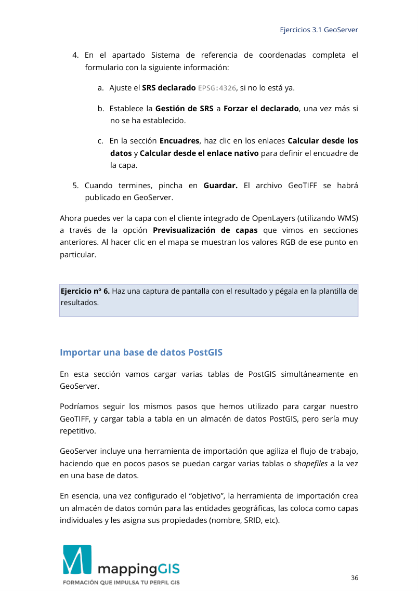
Consultar en el PDF · página 36
Ejercicio 7 · Previsualizar countries
Haz una captura de pantalla con la previsualización de la capa countries.
Pasos y contexto originales de la clase
Página 36
Ejercicios 3.1 GeoServer
36
4. En el apartado Sistema de referenc ia de coordenadas completa el
formulario con la siguiente información:
a. Ajuste el SRS declarado EPSG:4326, si no lo está ya.
b. Establece la Gestión de SRS a Forzar el declarado , una vez más si
no se ha establecido.
c. En la sección Encuadres, haz clic en los enl aces Calcular desde los
datos y Calcular desde el enlace nativo para definir el encuadre de
la capa.
5. Cuando termines, pincha en Guardar. El archivo GeoTIFF se ha brá
publicado en GeoServer.
Ahora puedes ver la capa con el cliente integrado de OpenLayers (ut ilizando WMS)
a través de la opción Previsualización de capas que vimos en secciones
anteriores. Al hacer clic en el mapa se muestran los valores RGB de ese punto en
particular.
Ejercicio nº 6. Haz una captura de pantalla con el resultado y pégala en la p lantilla de
resultados.
Importar una base de datos PostGIS
En esta sección vamos cargar varias tablas de PostGIS simultáneamente en
GeoServer.
Podríamos seguir los mismos pasos que hemos utilizado para cargar nuestro
GeoTIFF, y cargar tabla a tabla en un almacén de datos PostGIS, pero sería muy
repetitivo.
GeoServer incluye una herramienta de importación que agiliza el flujo de trabajo ,
haciendo que en pocos pasos se puedan cargar varias tablas o shapefiles a la vez
en una base de datos.
En esencia, una v ez configurado el “objetivo”, la herramienta de importación crea
un almacén de datos común para las entidades geográficas, las coloca como capas
individuales y les asigna sus propiedades (nombre, SRID, etc).
Página 37
Ejercicios 3.1 GeoServer
37
Desde la página de administración de GeoServer, haz clic en el enlace Almacenes
de Datos en el lado izquierdo, debajo de Datos.
1. Haz clic en Agregar nuevo almacén.
2. Selecciona PostGIS para seleccionar tablas espaciale s de PostGIS como
tipo de datos bajo la sección Orígenes de datos vectoriales.
3. Rellena el formulario. Muchos campos se dejarán con los valores por
defecto.
Nombre del origen de datos: world
Host: localhost
Port: 5432
Database: world
Username: postgres
Password: postgres
Página 38
Ejercicios 3.1 GeoServer
38
El resto de opciones las dejaremos como vienen por defecto.
4. Haz clic en Guardar cuando lo tengas todo.
5. Esta pantalla te pedirá que selecciones las capas que deseas importar de
toda la lista de recursos que existan en el almacén de datos.
6. Haz clic en la capa cities > Publicación.
Página 39
Ejercicios 3.1 GeoServer
39
7. En la página siguiente, en el apartado Encuadres > clic en “Calcular desde
los datos” y “calcular desde el encuadre nativo”.
8. Ve a la parte final y haz clic en Guardar.
9. Cuando el proceso se completa, puedes previsualizar la capa.
10. Para importar las siguientes capas debemos ir al apartado Capas:
11. Agregar nueva capa:
12. Agregar capa de earth:world.
13. Publica ahora las capas countries, lugares y rivers sin olvidar te de
calcular los encuadres desde los datos y desde el encuadre nativo.
Página 40
Ejercicios 3.1 GeoServer
40
Al finalizar deberías tener las cuatro capas en el apartado Capas:
Listo. Nuestros datos de PostGIS ya han sido publicados en GeoServer.
En una serie consolidada de pasos, se ha declarado un almacén e importado y
publicado varias capas en GeoServer.
Como paso final, vamos a previsualizar algo de lo que hemos hecho.
1. En la lista de capas, una de ellas es countries.
2. Haz clic en el enlace OpenLayers situado a la derecha de la capa.
3. Una nueva pestaña se abre en el navegador para mostrar la capa dentro de
la aplicación OpenLayers.
Ejercicio nº 7. Haz una captura de pantalla con la previsualización de la capa countries.
Ver página 40 del PDF original, con sus capturas
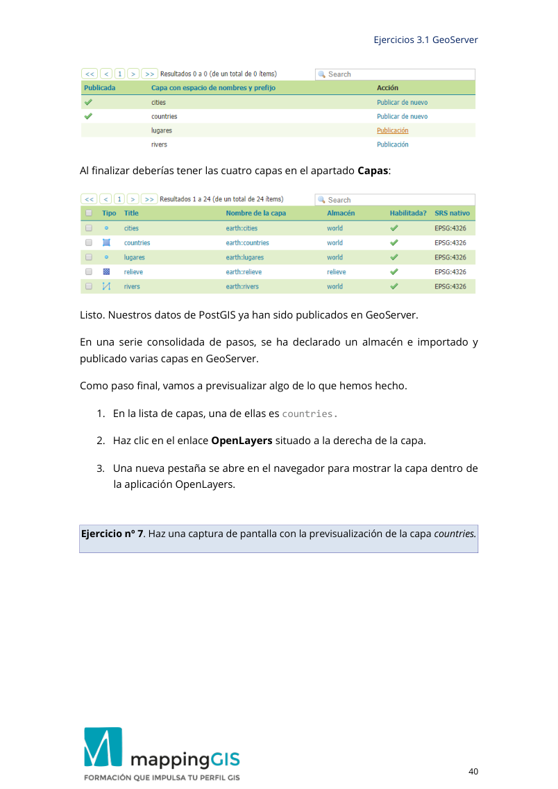
Consultar en el PDF · página 40
Ejercicio 8 · Imagen de ciudades
Haz una captura de pantalla con la imagen de mapa de la capa de ciudades.
Pasos y contexto originales de la clase
Página 40
Ejercicios 3.1 GeoServer
40
Al finalizar deberías tener las cuatro capas en el apartado Capas:
Listo. Nuestros datos de PostGIS ya han sido publicados en GeoServer.
En una serie consolidada de pasos, se ha declarado un almacén e importado y
publicado varias capas en GeoServer.
Como paso final, vamos a previsualizar algo de lo que hemos hecho.
1. En la lista de capas, una de ellas es countries.
2. Haz clic en el enlace OpenLayers situado a la derecha de la capa.
3. Una nueva pestaña se abre en el navegador para mostrar la capa dentro de
la aplicación OpenLayers.
Ejercicio nº 7. Haz una captura de pantalla con la previsualización de la capa countries.
Página 41
Ejercicios 3.1 GeoServer
41
Protocolos OGC – WMS, WFS, WCS y WPS
La petición WMS GetMap
Vamos a ver en el navegador la capa de ciudades, para mostrar la capa
necesitamos realizar una petición GetMap:
http://localhost:8080/geoserver/wms?
SERVICE=WMS&
VERSION=1.3.0&
REQUEST=GetMap&
BBOX=-180,-90,180,90&
WIDTH=1000&
HEIGHT=500&
LAYERS=cities
&FORMAT=image/png
El navegador te devolverá un mapa con la capa de ciudades. Al escribir la
sentencia en el navegador t en la precaución de eliminar todos los espacios (si los
hubiese) después de &.
Ejercicio nº 8. Haz una captura de pantalla con la imagen de mapa de la capa de
ciudades.
Ver página 41 del PDF original, con sus capturas
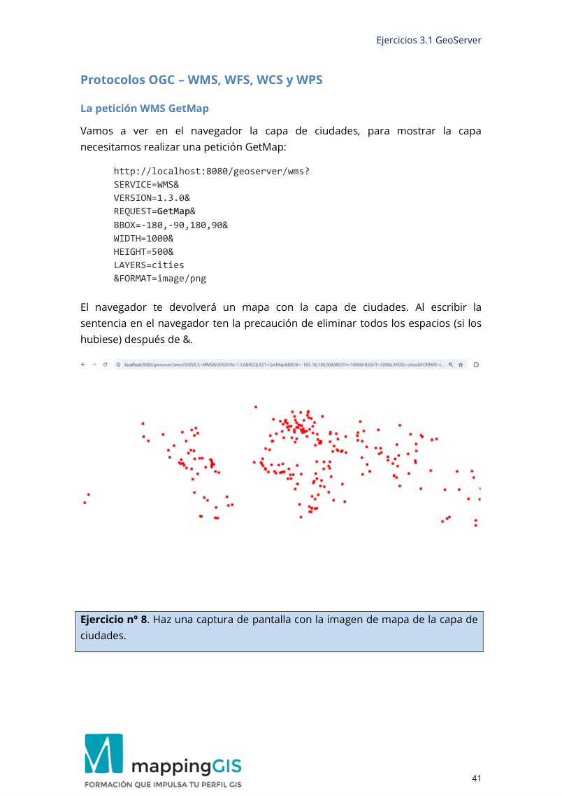
Consultar en el PDF · página 41
Ejercicio 9 · Respuesta WFS
Haz una captura de pantalla del archivo xml generado al publicar el servicio WFS.
Pasos y contexto originales de la clase
Página 41
Ejercicios 3.1 GeoServer
41
Protocolos OGC – WMS, WFS, WCS y WPS
La petición WMS GetMap
Vamos a ver en el navegador la capa de ciudades, para mostrar la capa
necesitamos realizar una petición GetMap:
http://localhost:8080/geoserver/wms?
SERVICE=WMS&
VERSION=1.3.0&
REQUEST=GetMap&
BBOX=-180,-90,180,90&
WIDTH=1000&
HEIGHT=500&
LAYERS=cities
&FORMAT=image/png
El navegador te devolverá un mapa con la capa de ciudades. Al escribir la
sentencia en el navegador t en la precaución de eliminar todos los espacios (si los
hubiese) después de &.
Ejercicio nº 8. Haz una captura de pantalla con la imagen de mapa de la capa de
ciudades.
Página 42
Ejercicios 3.1 GeoServer
42
La petición WFS GetFeature
El siguiente código muestr a un ejemplo de una solicitud WFS para ver las
características de la República Democrática del Congo (id 34)
http://localhost:8080/geoserver/wfs?
SERVICE=wfs&
VERSION=1.1.0&
REQUEST=GetFeature&
TYPENAME=earth:countries&
FEATUREID=countries.34
La respuesta contiene las coordenadas de cada vértice para el elemento en
cuestión, junto con los atributos asociados a ese elemento.
Podemos descargar estas geometrías indicando como formato de salida shape-
zip:
http://localhost:8080/geoserver/earth/wfs?
service=wfs&
version=2.0.0&
request=getfeature&
typeName=earth:cities&
outputFormat=shape-zip
La petición WFS GetCapabilities
Si introduces esta url en tu navegador:
http://localhost:8080/geoserver/earth/wfs?
service=wfs&
request=getcapabilities
El navegador te devolverá un xml que nos describe el servicio WFS. Por ahora es
suficiente para ver que el s ervicio WFS está publicado. Lo utilizaremos más tarde
en la sección de ejercicios de OpenLayers.
Ejercicio nº 9. Haz una captura de pantalla del archivo xml generado al publicar el
servicio WFS.
Ver página 42 del PDF original, con sus capturas
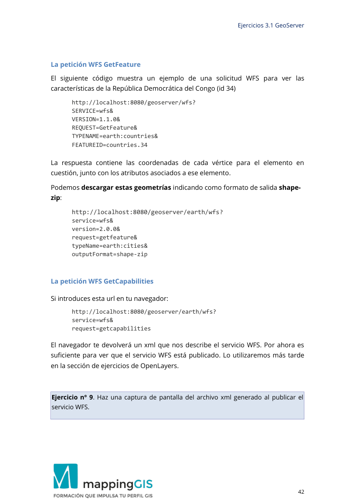
Consultar en el PDF · página 42
Ejercicio 10 · WMS de cities y countries
Haz una captura de pantalla de las capas cities y countries añadidas como WMS en QGIS.
Pasos y contexto originales de la clase
Página 42
Ejercicios 3.1 GeoServer
42
La petición WFS GetFeature
El siguiente código muestr a un ejemplo de una solicitud WFS para ver las
características de la República Democrática del Congo (id 34)
http://localhost:8080/geoserver/wfs?
SERVICE=wfs&
VERSION=1.1.0&
REQUEST=GetFeature&
TYPENAME=earth:countries&
FEATUREID=countries.34
La respuesta contiene las coordenadas de cada vértice para el elemento en
cuestión, junto con los atributos asociados a ese elemento.
Podemos descargar estas geometrías indicando como formato de salida shape-
zip:
http://localhost:8080/geoserver/earth/wfs?
service=wfs&
version=2.0.0&
request=getfeature&
typeName=earth:cities&
outputFormat=shape-zip
La petición WFS GetCapabilities
Si introduces esta url en tu navegador:
http://localhost:8080/geoserver/earth/wfs?
service=wfs&
request=getcapabilities
El navegador te devolverá un xml que nos describe el servicio WFS. Por ahora es
suficiente para ver que el s ervicio WFS está publicado. Lo utilizaremos más tarde
en la sección de ejercicios de OpenLayers.
Ejercicio nº 9. Haz una captura de pantalla del archivo xml generado al publicar el
servicio WFS.
Página 43
Ejercicios 3.1 GeoServer
43
Visualización de nuestros servicios WMS y WFS en un cliente SIG
Visualiza nuestras capas cities y countries como servicios WMS en QGIS. B asta con
escribir: http://localhost:8080/geoserver/wms?
Ejercicio nº 10 . Haz una captura de pantalla de las capas cities y countries
añadidas como WMS en QGIS.
Visualiza la capa cities como WFS en un cliente SIG con:
http://localhost:8080/geoserver/wfs?
Visualización de nuestro servicio WCS en un cliente SIG
Para realizar la conexión y correcta visualización, en primer lugar, debemos ir al
apartado Datos > Capas > Nombre de la capa earth:relieve y asegurarse de que
las casillas "Habilitado" y “Anunciado” estén marcadas:
Ejercicio nº 1 1. Haz una captura de pantalla de la capa cities añadida como WFS
en QGIS.
Ver página 43 del PDF original, con sus capturas
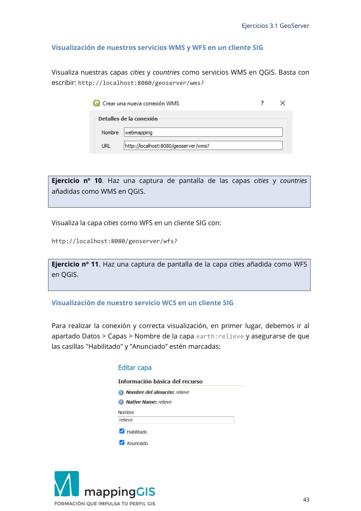
Consultar en el PDF · página 43
Ejercicio 11 · WFS de cities
Haz una captura de pantalla de la capa cities añadida como WFS en QGIS.
Pasos y contexto originales de la clase
Página 43
Ejercicios 3.1 GeoServer
43
Visualización de nuestros servicios WMS y WFS en un cliente SIG
Visualiza nuestras capas cities y countries como servicios WMS en QGIS. B asta con
escribir: http://localhost:8080/geoserver/wms?
Ejercicio nº 10 . Haz una captura de pantalla de las capas cities y countries
añadidas como WMS en QGIS.
Visualiza la capa cities como WFS en un cliente SIG con:
http://localhost:8080/geoserver/wfs?
Visualización de nuestro servicio WCS en un cliente SIG
Para realizar la conexión y correcta visualización, en primer lugar, debemos ir al
apartado Datos > Capas > Nombre de la capa earth:relieve y asegurarse de que
las casillas "Habilitado" y “Anunciado” estén marcadas:
Ejercicio nº 1 1. Haz una captura de pantalla de la capa cities añadida como WFS
en QGIS.
Consultar en el PDF · página 43
Ejercicio 12 · WCS de relieve
Haz una captura de pantalla de la c apa relieve como WCS en QGIS.
Pasos y contexto originales de la clase
Página 43
Ejercicios 3.1 GeoServer
43
Visualización de nuestros servicios WMS y WFS en un cliente SIG
Visualiza nuestras capas cities y countries como servicios WMS en QGIS. B asta con
escribir: http://localhost:8080/geoserver/wms?
Ejercicio nº 10 . Haz una captura de pantalla de las capas cities y countries
añadidas como WMS en QGIS.
Visualiza la capa cities como WFS en un cliente SIG con:
http://localhost:8080/geoserver/wfs?
Visualización de nuestro servicio WCS en un cliente SIG
Para realizar la conexión y correcta visualización, en primer lugar, debemos ir al
apartado Datos > Capas > Nombre de la capa earth:relieve y asegurarse de que
las casillas "Habilitado" y “Anunciado” estén marcadas:
Ejercicio nº 1 1. Haz una captura de pantalla de la capa cities añadida como WFS
en QGIS.
Página 44
Ejercicios 3.1 GeoServer
44
Visualiza nuestra capa relieve como WCS en un cliente SIG con:
http://localhost:8080/geoserver/wcs?
Servicio de Procesamiento Web (WPS)
El Servicio de Procesamiento Web (WPS) es un servicio para la publicación de
procesos geoespaciales, algoritmos y cálculos.
WPS amplía el servidor de mapas web para proporcionar análisis geoespacial. WPS
en GeoServer permite una integración directa con otros servicios de GeoServer y el
catálogo de datos. Esto significa que es posible crear procesos sobre la base de
datos servidas en GeoServer, incluyendo los resultados de un proceso que se
almacenan como una nueva capa. De esta mane ra, WPS actúa como un completo
navegador basado en las herramientas de análisis geoespacial, capaz de leer y
escribir datos desde y hacia GeoServer.
El Servicio de Procesamiento Web es un complemento de GeoServer que hemos
instalado al comienzo de la unidad.
El complemento WPS proporciona una colección de decenas de procesos estándar
y además dispone de la capacidad de agregar otros procesos adicionales.
Vamos a realizar una petición para construir un geoproceso en el servidor.
1. Para comenzar ve a la sección inferior izquierda Demos:
Ejercicio nº 1 2. Haz una captura de pantalla de la c apa relieve como WCS en
QGIS.
En caso de que no se muestre la capa puedes realizar una petición
DescribeCoverage desde el navegador:
http://localhost:8080/geoserver/wcs?REQUEST=DescribeCoverage&
SERVICE=WCS&VERSION=1.0.0&COVERAGE=relieve
Ver página 44 del PDF original, con sus capturas
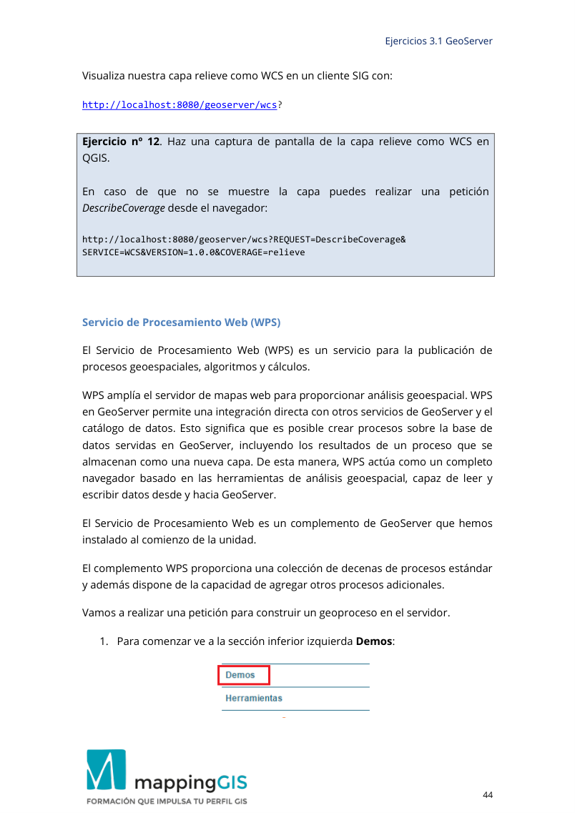
Consultar en el PDF · página 44
Ejercicio 13 · Resultado del proceso
Haz una captura de pantalla con la visualización de la nueva capa generada utilizando un cliente SIG, añade también la ca pa countries para comprobar el resultado.
Pasos y contexto originales de la clase
Página 44
Ejercicios 3.1 GeoServer
44
Visualiza nuestra capa relieve como WCS en un cliente SIG con:
http://localhost:8080/geoserver/wcs?
Servicio de Procesamiento Web (WPS)
El Servicio de Procesamiento Web (WPS) es un servicio para la publicación de
procesos geoespaciales, algoritmos y cálculos.
WPS amplía el servidor de mapas web para proporcionar análisis geoespacial. WPS
en GeoServer permite una integración directa con otros servicios de GeoServer y el
catálogo de datos. Esto significa que es posible crear procesos sobre la base de
datos servidas en GeoServer, incluyendo los resultados de un proceso que se
almacenan como una nueva capa. De esta mane ra, WPS actúa como un completo
navegador basado en las herramientas de análisis geoespacial, capaz de leer y
escribir datos desde y hacia GeoServer.
El Servicio de Procesamiento Web es un complemento de GeoServer que hemos
instalado al comienzo de la unidad.
El complemento WPS proporciona una colección de decenas de procesos estándar
y además dispone de la capacidad de agregar otros procesos adicionales.
Vamos a realizar una petición para construir un geoproceso en el servidor.
1. Para comenzar ve a la sección inferior izquierda Demos:
Ejercicio nº 1 2. Haz una captura de pantalla de la c apa relieve como WCS en
QGIS.
En caso de que no se muestre la capa puedes realizar una petición
DescribeCoverage desde el navegador:
http://localhost:8080/geoserver/wcs?REQUEST=DescribeCoverage&
SERVICE=WCS&VERSION=1.0.0&COVERAGE=relieve
Página 45
Ejercicios 3.1 GeoServer
45
2. Selecciona la última opción: Generador de consultas WPS Generador de
consultas WPS paso a paso.
Nota
En el caso de que no aparezca esta opción, debes realizar de nuevo la copia
de archivos .jar al directorio de GeoServer.
3. A continuación, aparecerá un listado con todos los procesos disponibles en
GeoServer.
Los procesos se dividen en tres categorías: vector, ráster y geometría, haciendo
referencia al tipo de contenido geoespacial utilizado como entrada del proceso.
Estas categorías son amplias, ya que los procesos pueden tomar múltiples
tipos de entrada.
4. Busca el geoproceso vectorial vec:Centroid.
Página 46
Ejercicios 3.1 GeoServer
46
Este es un proceso sencillo que calcula el centro geométrico de los elementos
de una capa, como puedes leer en la descripción.
5. Como Entrada para el proceso seleccionamos una capa vectorial
(VECTOR_LAYER) y escogemos c omo capa de entrada la capa de pa íses
(earth:countries).
6. Como Salidas del proceso, vamos a escoger la opción application/zip para
generar un archivo comprimido con la nueva capa de puntos.
7. No es necesario autenticarnos porque el servicio no está restringido aun,
pero cuando lo esté deberemos introducir aquí el nombre de usuario con
permisos para realizar geoprocesamiento.
Página 47
Ejercicios 3.1 GeoServer
47
8. Cuando estés listo pincha en el botón Ejecute el proceso. Al cabo de unos
segundos se descargará una nueva capa en un archivo comprimido ZIP.
Ejercicio nº 13. Haz una captura de pantalla con la visualización de la nueva capa
generada utilizando un cliente SIG, añade también la ca pa countries para
comprobar el resultado.
Ver página 47 del PDF original, con sus capturas
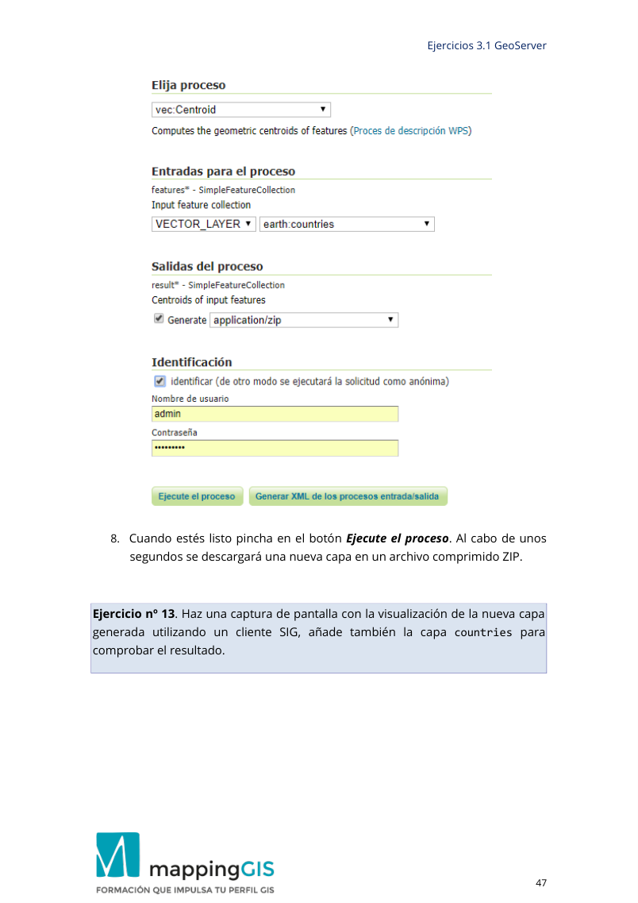
Consultar en el PDF · página 47
Ejercicio 14 · Grupo worldgroup
Previsualiza la capa worldgroup. H az una captura de pantalla y pégala en la plantilla de resultados.
Pasos y contexto originales de la clase
Página 47
Ejercicios 3.1 GeoServer
47
8. Cuando estés listo pincha en el botón Ejecute el proceso. Al cabo de unos
segundos se descargará una nueva capa en un archivo comprimido ZIP.
Ejercicio nº 13. Haz una captura de pantalla con la visualización de la nueva capa
generada utilizando un cliente SIG, añade también la ca pa countries para
comprobar el resultado.
Página 48
Ejercicios 3.1 GeoServer
48
Otros Formatos de datos soportados
Sólo hemos trabajado con dos de los formatos de datos que soporta GeoServer.
Veamos otros almacenes de datos que se pueden publicar a través de GeoServer:
Esta lista no es exhaustiva. Cada cierto tiempo se desarrollan nuevas conexiones
del almacén de datos. Los principales proveedores de bases de datos espaciales
(Microsoft SQL Server, Oracle, ArcSDE, etc) son soportados por GeoServer.
Es interesante el uso de un WMS en cascada , ya que podremos servir desde
nuestro servidor un WMS externo, gestionándolo como si estuviera en local. Pero
con la limitación principal de que no será posible modificar su estilo.
El utilizar las diferentes fuentes de datos no presenta dificultades, pues es el
proceso es el mismo que hemos visto en los ejercicios anteriores. Con el fin de
afianzar los conocimientos vamos a cargar una capa en formato Geopackage,
creando un nuevo espacio de trabajo.
Página 49
Ejercicios 3.1 GeoServer
49
Carga de datos desde un archivo Geopackage
Trabajaremos en un nuevo espacio de trabajo llamado hotdogs_proyect.
1. El primer paso será crear un nuevo espacio de trabajo:
Y en la ventana que se abre escribimos el nombre y la URI.
2. El segundo paso será importar una capa de tipo GeoPackage al directorio
privado. En la sección Almacen es de datos > Agregar nuevo almacén. Elige
como fuente datos GeoPackage - GeoPackage
Página 50
Ejercicios 3.1 GeoServer
50
3. En Espacio de trabajo selecciona el espacio de trabajo hotdogs_proyect.
4. Como nombre del origen de datos escribimos hotdogs.
5. Vamos a importar la capa hotdogs que se encue ntra en
<webmapping>\Capas\hotdogs.gpkg. Escribe en la casilla:
file://C:\webmapping\Capas\hotdogs.gpkg
6. Clic en el botón Guardar.
Página 51
Ejercicios 3.1 GeoServer
51
7. En la página siguiente clic en Publicación.
8. Como recordarás de ejercicios anteriores debemos calcular los Encuadres
(Bounding Box).
9. Una vez calculados guarda los cambios.
10. Vamos ahora a previsualizar la capa con OpenLayers.
Creación de un grupo de capas
Un grupo de capas es un contenedor en el que las capas y otros grupos pueden
ser organizados en una estructura jerárquica.
Un grupo de capas puede ser referido por un nombre, esto permite peticiones
WMS más simples, al necesitar hacer referencia a una sola capa en lugar d e
múltiples capas individuales.
Un grupo de capas contiene información sobre las capas que componen el grupo
de capas, el orden en que éstas se visualizan, la proyección, los estilos asociados,
etc
Los grupos de capas también nos permiten combinar datos de distinta geometría
y contenido.
Página 52
Ejercicios 3.1 GeoServer
52
En la sección anterior cargamos varias capas de PostGIS. Ahora vamos a utilizar un
grupo de capas para combinarlas en una única capa “virtual”.
1. Desde la página de administración de Geoserver haz clic en el enlace
Grupos de capas, debajo del apartado Datos.
2. Haz clic en Agregar nuevo grupo de capas en la parte superior de la
página.
3. Introduce worldgroup en los campos Nombre y Título.
4. No selecciones ningún espacio de trabajo.
5. Ahora vamos a añadir capas a nuestro grupo de capas. (Obviaremos el
apartado Límites y otros campos del formulario por ahora). Clic en el enlace
Agregar capa.
6. Selecciona cada una de las siguientes capas de modo que aparezcan en
este orden:
earth:relieve
earth:countries
earth:cities
earth:rivers
Página 53
Ejercicios 3.1 GeoServer
53
El orden de las capas en la definición de grupo es importante.
La capa superior de la list a se dibujará en p rimer lugar, la de más abajo será
la última. Asegúrate de que el orden coincide con el listado de arriba.
Reordena las capas si es necesario haciendo clic en las flechas de posición para
cada capa.
7. Marca la casilla de Estilo por defecto para las cuatro capas.
8. Ahora, haz clic en el botón Generar límites para determinar el encuadre
para todo el grupo de capas. Este botón también determinará la proyección
del grupo de capas, que por defecto es igual a la proyección de la capa
superior. Si la proyección no se e ncuentra de forma automática, escribe
EPSG: 4326.
9. Haz clic en Guardar cuando hayas terminado.
Ejercicio nº 14. Previsualiza la capa worldgroup. H az una captura de pantalla y
pégala en la plantilla de resultados.
Ver página 53 del PDF original, con sus capturas
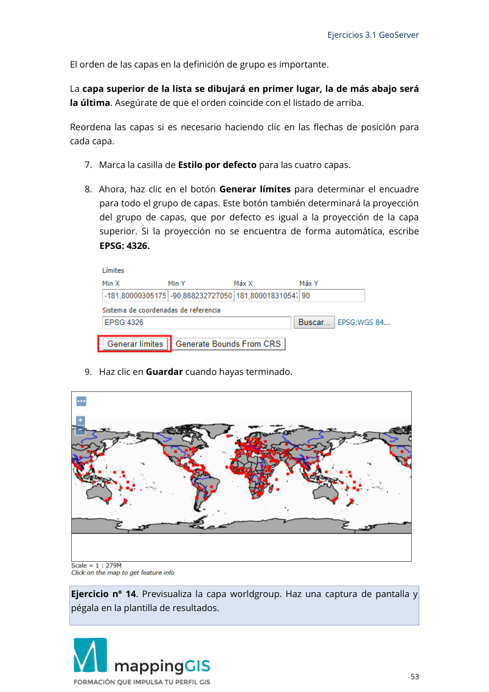
Consultar en el PDF · página 53
Ejercicio 15 · Estilos de las capas
Haz una captura de pantalla de cada una de las capas y pégala en la plantilla de resultados.
Pasos y contexto originales de la clase
Página 53
Ejercicios 3.1 GeoServer
53
El orden de las capas en la definición de grupo es importante.
La capa superior de la list a se dibujará en p rimer lugar, la de más abajo será
la última. Asegúrate de que el orden coincide con el listado de arriba.
Reordena las capas si es necesario haciendo clic en las flechas de posición para
cada capa.
7. Marca la casilla de Estilo por defecto para las cuatro capas.
8. Ahora, haz clic en el botón Generar límites para determinar el encuadre
para todo el grupo de capas. Este botón también determinará la proyección
del grupo de capas, que por defecto es igual a la proyección de la capa
superior. Si la proyección no se e ncuentra de forma automática, escribe
EPSG: 4326.
9. Haz clic en Guardar cuando hayas terminado.
Ejercicio nº 14. Previsualiza la capa worldgroup. H az una captura de pantalla y
pégala en la plantilla de resultados.
Página 54
Ejercicios 3.1 GeoServer
54
Estilos
Un estilo es una directiva de visualización para la representación de los datos
geográficos.
Un estilo contiene las instrucciones básicas sobre color, forma y tamaño, junto con
reglas avanzadas para la representación de objetos geográficos de forma distinta
según los atributos y los niveles de zoom.
Cada capa debe estar asociada con al menos un estilo (GeoServer aplica un estilo
predeterminado para cada nueva capa).
GeoServer utiliza el lenguaje de marcado Styled Layer Descriptor (SLD) para
describir los datos geoespaciales. SLD es un estándar basado en XML que ha sido
creado por la OGC. Para más información sobre los esquemas SLD, por favor ve a
la página de la OGC:
http://www.opengeospatial.org/standards/sld
Estructura de un SLD
Un archivo SLD contiene la siguiente estructura jerarquizada:
Header
FeatureTypeStyles
◦ Rules
▪ Symbolizers
El header (encabezado) del SLD contiene metadatos sobre los namespaces del XML,
y es generalmente idéntico en todos los SLD. Los detalles de la cabecera están más
allá del alcance de este curso.
Un FeatureTypeStyle es un conjunto de reglas de estilo. La agrupación por
FeatureTypeStyle afecta al orden de representación, el primer FeatureTypeStyle se
representará en primer lugar, seguido por el segundo, etc,
Una Rule (regla) es una directiva única de estilo. Se puede aplicar globalmente a
una capa, o puede tener un filtro asociado con ella para que la regla se aplique de
Página 55
Ejercicios 3.1 GeoServer
55
manera condicional. Estas condiciones pueden basarse en los atributos de los
datos, o sobre el nivel de escala (zoom) de los datos que se representan.
Un Symbolizer (simbolizador) es la instrucción de estilo actual. Hay cinco tipos de
simbolizadores:
PointSymbolizer
LineSymbolizer
PolygonSymbolizer
RasterSymbolizer
TextSymbolizer
Puede haber uno o más FeatureTypeStyles SLD, por una o más reglas por
FeatureTypeStyles, y uno o más Symbolizers por regla.
La documentación GeoServer (disponible en http://docs.geoserver.org) contiene
una colección de estilos SLD llamado SLD Cookbook, diseñado para aquellos que
deseen aprender SLD, o aquellos que quieren una referencia rápida. SLD Cookbook
está disponible en:
https://docs.geoserver.org/latest/en/user/styling/sld/cookbook/index.html
En esta sección, haremos lo siguiente:
1. Cargar un archivo SLD para nuestras capas,
2. Echar un vistazo a la sintaxis de un SLD, y
3. Aplicar dichos estilos a nuestras capas.
Cargando estilos
1. En el menú GeoServer, clic en el enlace de Estilos
2. Se abre la lista de todos los estilos actualmente definidos en GeoServer.
Página 56
Ejercicios 3.1 GeoServer
56
3. Busca el estilo point en tu lista. Desplázate u ordena por nombre si es
necesario.
4. Pincha en el enlace para abrir el Editor de SLD.
5. Echa un vistazo a la visualización del SLD. Sin profundizar en los detalles,
¿qué es lo que vemos?
Que es un subconjunto de XML.
Hay unas cuantas etiquetas y atributos “estándar”.
Por el medio hay algunas instrucciones específicas de simbología.
6. Es un SLD muy básico que representa un cuadrado de color violeta.
7. Podríamos comenzar a editar el SLD a mano para cambiar algo de esto,
pero hay una manera más fácil de hacerlo.
8. En la parte inferior de la página, haz clic en el botón Seleccionar archivo y
busca el archivo <webmapping>\Estilos\earth_cities.sld. Selecciónalo y
pincha en Abrir.
9. Ahora haz clic en el botón “Cargar…”:
10. Confirma que sí deseas sobre escribir el contenido del estilo actual.
11. El contenido del editor SLD se sustituye por el contenido del arch ivo SLD
que contiene unas instrucciones de estilo mucho más elegante que el
predeterminado.
Página 57
Ejercicios 3.1 GeoServer
57
12. Haz clic en el botón Previsualización de leyenda, situado en la parte superior
derecha de la página, para comprobar que el estilo sea el siguiente:
13. Clic en Validar, Guardar y Aplicar para guardar la subida del SLD en la
definición de estilo actual.
La definición actualizada se guarda como un archivo de SLD en el equipo local en
el directorio C:\data_dir\styles
Repite este proceso para vincular los estilos
earth_countries al ya existente polygon.
earth_rivers al estilo existente line.
Los SLD origen están en el directorio <webmapping>\Estilos\.
Página 58
Ver página 58 del PDF original, con sus capturas
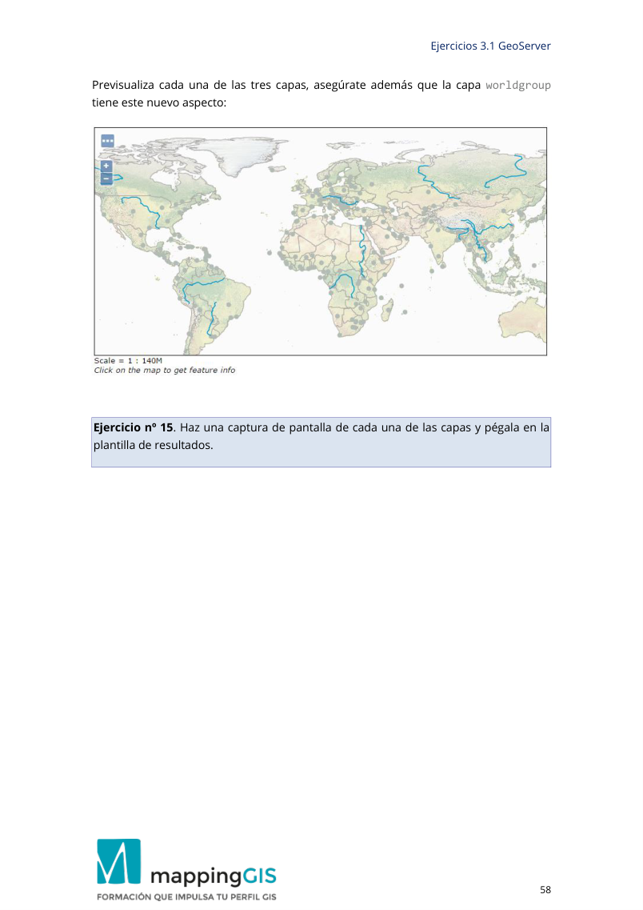
Consultar en el PDF · página 58
Ejercicio 16 · Nueva simbología
Previsualiza la capa y pega el resultado con la nueva simbología en la plantilla de resultados.
Pasos y contexto originales de la clase
Página 58
Ejercicios 3.1 GeoServer
58
Previsualiza cada una de las tres capas, asegúrate además que la capa worldgroup
tiene este nuevo aspecto:
Ejercicio nº 15. Haz una captura de pantalla de cada una de las capas y pégala en la
plantilla de resultados.
Página 59
Ejercicios 3.1 GeoServer
59
Estilos CSS en GeoServer
El módulo CSS para GeoServer añade un editor de estilos
alternativo a GeoServer que utiliza un lenguaje derivado de CSS e n
lugar de SLD. Te será muy útil si estás familiarizado con el diseño
web con CSS.
Los estilos CSS (Cascading Style Sheets) se convierten internamente en SLD,
siendo estos últimos los utilizados de forma normal por GeoServer. La sintaxis CSS
se duplica desde un estilo SVG ( Scalable Vector Graphics) cuando es posible, pero
extendido para evitar la pérdida de las opciones que ofrece el SLD. Por ejemplo, se
proporcionan utilida des para extraer los atributos de los objetos geográficos y
usarlos como etiquetas, el tamaño de los símbolos puntuales de acuerdo a los
valores de los datos, etc.
Este complemento ya lo hemos añadido como una extensión de GeoServer.
Si la instalación se h a realizado correctamente, en el momento de crear un nuevo
estilo podremos escoger dentro de las opciones el formato CSS:
Página 60
Ejercicios 3.1 GeoServer
60
Creando un estilo en una capa de puntos
El archivo SLD para la capa cities ahora se ve así:
<?xml version="1.0" encoding="UTF-8"?>
<sld:UserStyle xmlns="http://www.opengis.net/sld" xmlns:sld="http://www.opengi
s.net/sld" xmlns:ogc="http://www.opengis.net/ogc" xmlns:gml="http://www.opengi
s.net/gml">
<sld:NamedLayer>
<sld:Name>earth_cities</sld:Name>
<sld:UserStyle>
<sld:Name>earth_cities</sld:Name>
<sld:Title>earth_cities</sld:Title>
<sld:IsDefault>1</sld:IsDefault>
<sld:FeatureTypeStyle>
<sld:Name>name</sld:Name>
<sld:Rule>
<sld:Title>earth_cities</sld:Title>
<sld:PointSymbolizer>
<sld:Graphic>
<sld:Mark>
<sld:WellKnownName>circle</sld:WellKnownName>
<sld:Fill>
<sld:CssParameter name="fill">#B2BBB4</sld:CssParameter>
</sld:Fill>
</sld:Mark>
<sld:Size>
<ogc:Literal>8</ogc:Literal>
</sld:Size>
</sld:Graphic>
</sld:PointSymbolizer>
</sld:Rule>
</sld:FeatureTypeStyle>
</sld:UserStyle>
</sld:NamedLayer>
</sld:StyledLayerDescriptor>
¡Más de 25 líneas! Ahora, vamos a escribir en CSS la misma simbología en menos
de 10 líneas de código.
En primer lugar, hacemos clic sobre el apartado Estilos, bajo el menú Datos y
hacemos clic sobre el enlace Agregar un nuevo estilo:
Página 61
Ejercicios 3.1 GeoServer
61
De este modo iniciamos un nuevo esti lo. En la ventana que se abre l e asignamos
un nombre (lugares_CSS), un espacio de trabajo (earth) y el formato (CSS).
En la sección Style Content generamos un estilo por defecto de ti po punto para
poder partir de un código base que podamos modificar.
Seleccionamos pues en el menú desplegable Point y hacemos clic en Generar…
El código que se crea por defecto será similar al siguiente:
/* @title violet point */
* {
mark: symbol(square);
mark-size: 6px;
:mark {
fill: #3300ff;
}
}
Página 62
Ejercicios 3.1 GeoServer
62
La sintaxis de CSS
La sintaxis de CSS es distinta de la de HTML. El formato general se ve así:
selector {
propiedad: valor;
}
Un selector identifica una parte de los datos de est ilo. En este caso, el selector es
*, lo que indica que todos los datos deben utilizar las propiedades de estilo.
Las propiedades van dentro de llaves ( {}) y especifican cómo debe ser el estilo de
los elementos afectados. Las propiedades consisten en pares de nombre / valor
separados por dos puntos (:).
Un valor es una posible configuración de una propiedad. La propiedad fill puede
tener el valor gris, rojo, azul, negro o cualquier otro color.
Página 63
Ejercicios 3.1 GeoServer
63
Símbolos
La extensión CSS de GeoServer contiene una colección d e símbolos predefinidos
que podemos utilizar y combinar para crear marcas simples, trazos y patrones de
relleno sin necesidad de un programa de edición de imágenes. Podemos acceder a
estos símbolos a través de la función CSS symbol ().
Por ejemplo, el símbolo del círculo (circle) hace que sea fácil crear un sencillo punto
sobre una capa de puntos:
* {
mark: symbol(circle);
}
Sin embargo, hay otros símbolos disponibles, como circle, square, triangle, arrow,
cross, star…
Selectores de símbolos
Los Símbolos ofrecen algunas opciones de estilo adicionales. Para especificar estas
propiedades de estilo, sólo tenemos que añadir otra regla con un selector especial.
Hay varios selectores “pseudoclases” que se utilizan para selectores de estilo.
Volviendo a nuestro estilo para la capa lugares (que son puntos) vamos a sustituir
el color en código hexadecimal por un nombre reconocible, el rojo:
* {
mark: symbol(square);
mark-size: 6px;
}
:mark {
fill: red;
}
Hay dos reglas en este CSS, la primera de ellas (línea s 1 -4) es para todos los
elementos, y les pide que se representen con una marca cuadrada y de 6 píxeles
de ancho.
La segunda regla usa el selector de símbolos :mark, que selecciona todas las
marcas en las normas anteriores, y permite especificar cómo relle nar el contenido
del cuadrado, en este caso, con un sólido relleno rojo.
Página 64
Ejercicios 3.1 GeoServer
64
Pincha en los botones Validar y Aplicar. Al hacer clic en el botón Aplicar se genera
el estilo que nos permite publicarlo para vincularlo a una o varias capas.
Ahora vamos a la segunda pestaña: Publishing para asociar el estilo a nuestra capa
lugares.
Marcaremos la casilla Default para asociar este estilo por defecto cuando veamos
la capa lugares:
Clic en el botón Aplicar y en Guardar para enviar el estilo en el servidor.
El nuevo estilo ya aparece dentro de nuestro listado de estilos:
Página 65
Ejercicios 3.1 GeoServer
65
Hacemos clic sobre el estilo para continuar examinando las opciones disponibles.
Ahora vamos a la tercera pestaña Layer Preview para ver el aspecto de la nueva
simbología de nuestra capa lugares:
Página 66
Ejercicios 3.1 GeoServer
66
La cuarta pestaña Layer Attributes nos muestra un listado de los campos que
contiene la capa:
Listo. Hemos creado un nuevo estilo mediante código CSS de una forma mucho
más sencilla que mediante código SLD.
CSS Cookbook
El CSS Cookbook es una colección de recetas CSS para la creación de diversos tipos
de estilos de mapa. Siempre que sea posible, cada ejemplo está diseñado para
mostrar un único e lemento CSS para que el código se pueda copiar de los
ejemplos y adaptarlo en nuestros estilos CSS. La mayoría de los ejemplos también
existen en el SLD Cookbook, para hacer una comparación inmediata entre las dos
sintaxis.
Para más información puedes consultar la documentación de GeoServer.
Filtros en GeoServer
En esta sección definiremos un nuevo estilo para nuestra capa cities. Crearemos
una simbología para la capa de puntos de tal manera que tengamos tres clases:
Una clase con una simbología de puntos pequeños para las ciudades de
menos de un millón de habitantes
Otra clase con otra simbología para las ciudades ente 1 millón y 10 millones
con un punto mediano
Una tercera clase con las ciudades de m ás de 10 millones de habitantes,
representado por un punto mayor.
Página 67
Ejercicios 3.1 GeoServer
67
Crear un filtro en SLD nos llevaría decenas de líneas de código, esta operación es
mucho más sencilla utilizando CSS.
1. Ve a la sección Estilos y crea un nuevo estilo.
2. Ponle como nombre cities_filter
3. No selecciones ningún espacio de trabajo.
4. Selecciona el formato CSS.
5. En este estilo incluiremos la configuración de una marca base (círculo azul y
el tamaño por defecto) y cambiaremos el tamaño en fun ción del valor del
atributo de la población, valores pequeños crearán círculos pequeños, y
valores más grandes crearán círculos más grandes. Comenzamos creando
una marca de tipo círculo y de color azul:
* {
mark: symbol(circle);
}
:mark {
fill: #0033CC;
}
6. Valida el estilo y aplícalo.
7. Ve a la pestaña Publishing para asociarlo a la capa cities, aun que no lo
estableceremos como estilo por defecto. Solo marcaremos pues la casilla
“Associated”.
Página 68
Ejercicios 3.1 GeoServer
68
8. Vamos a la pestaña Layer Preview para ver el aspecto del estilo vinculado a
la capa cities.
9. Desde esta pestaña continuaremos editando el estilo mediante código CSS.
10. Utilizaremos una operación de comparación basado en CQL (Common
Query Language), basándonos en los atributos y el valor de los atributos de
la capa . De este modo el filtro pop_max < 1000000 establece la
representación de las ciudades cuya población es menor a 1000000
habitantes. Y fijamos un tamaño de 6 pixeles para esta primera regla.
Añade el siguiente código después del código existente:
[pop_max < 1000000] {
mark-size: 6;
}
11. Para la segunda regla utilizaremos los selectores de comparación >= y <:
Página 69
Ejercicios 3.1 GeoServer
69
[pop_max >= 1000000] [pop_max < 10000000] {
mark-size: 10;
}
12. La tercera regla puede ser creada de la misma manera que la primera:
[pop_max >= 10000000] {
mark-size: 14;
}
Proporcionando metadatos
Una característica que aparece en SLD y que también tiene análogo en CSS es la
capacidad para proporcionar los metadatos de estilos y reglas de estilo.
Estos metadatos sirven para crear automáticamente bonitas imágenes de leyenda
desde el estilo.
Podemos añadir comentarios antes de nuestras reglas incluyendo líneas que
comiencen con ‘@title‘ y ‘@abstract’.
/* @title Small cities */
[pop_max < 1000000] {
mark-size: 6; }
/* @title Medium cities */
[pop_max >= 1000000] [pop_max < 10000000] {
mark-size: 10; }
/* @title Large cities */
[pop_max >= 10000000] {
mark-size: 14;
}
13. Poniendo todo junto, ahora debería tener un estilo como este:
* {
Página 70
Ejercicios 3.1 GeoServer
70
mark: symbol(circle);
}
:mark { fill: #0033CC;
}
/* @title Small cities */
[pop_max < 1000000] {
mark-size: 6; }
/* @title Medium cities */
[pop_max >= 1000000] [pop_max < 10000000] {
mark-size: 10; }
/* @title Large cities */
[pop_max >= 10000000] {
mark-size: 14; }
14. Pulsa el botón Enviar en la parte inferior del formulario de CSS para
guardar los cambios . Cuidado porque esta acción nos “echa” al listado de
estilos de GeoServer
15. Accedemos de nue vo al estilo cities_filter y p inchamos en la pest aña Layer
Preview para comprobar si el estilo se representa correctam ente sobre
nuestra capa:
16. Finalmente vamos al menú de la izquierda Datos > Capas, hacemos clic
sobre la capa cities > pestaña Publicación, y en la opción Estilo por
defecto aplicamos el estilo que hemos creado: cities_filter.
Página 71
Ejercicios 3.1 GeoServer
71
17. No olvides hacer clic en Guardar.
Ejercicio nº 16. Previsualiza la capa y pega el resultado con la nueva simbología en
la plantilla de resultados.
Estilos basados en escalas
Podemos modificar el estilo de nuestras capas en diferentes niveles de zoom, para
ello se utiliza el operador @scale. Por ejemplo:
* {
fill: none;
}
[@scale < 1000000] {
stroke-width: 6;
label: [feature_na];
}
[@scale > 1000000] [@scale < 2000000] {
stroke-width: 4;
}
[@scale > 2000000] {
stroke-width: 2;
}
En el CSS Cookbok encontrarás varios ejemplos, para puntos, líneas y polígonos.
Crea un nuevo estilo sobre la capa de ciudades que se llame cities_labels. Utiliza
para ello el CSS Cookbook.
Este estilo debe mostrar las etiquetas que muestren el nombre de las
ciudades
Utiliza como marcador un triángulo.
Ejercicio nº 17. Haz una captura de pantalla con la simbología cities_labels.
Ver página 71 del PDF original, con sus capturas
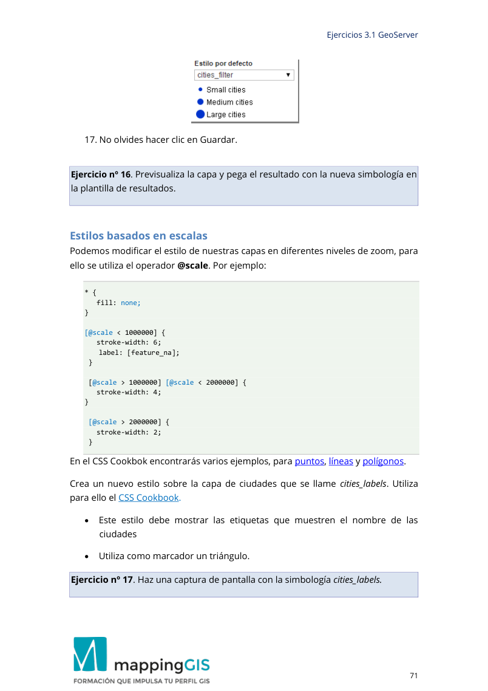
Consultar en el PDF · página 71
Ejercicio 17 · Etiquetas cities_labels
Haz una captura de pantalla con la simbología cities_labels.
Pasos y contexto originales de la clase
Página 71
Ejercicios 3.1 GeoServer
71
17. No olvides hacer clic en Guardar.
Ejercicio nº 16. Previsualiza la capa y pega el resultado con la nueva simbología en
la plantilla de resultados.
Estilos basados en escalas
Podemos modificar el estilo de nuestras capas en diferentes niveles de zoom, para
ello se utiliza el operador @scale. Por ejemplo:
* {
fill: none;
}
[@scale < 1000000] {
stroke-width: 6;
label: [feature_na];
}
[@scale > 1000000] [@scale < 2000000] {
stroke-width: 4;
}
[@scale > 2000000] {
stroke-width: 2;
}
En el CSS Cookbok encontrarás varios ejemplos, para puntos, líneas y polígonos.
Crea un nuevo estilo sobre la capa de ciudades que se llame cities_labels. Utiliza
para ello el CSS Cookbook.
Este estilo debe mostrar las etiquetas que muestren el nombre de las
ciudades
Utiliza como marcador un triángulo.
Ejercicio nº 17. Haz una captura de pantalla con la simbología cities_labels.
Consultar en el PDF · página 71
Ejercicio 18 · Activar teselas vectoriales
Haz una captura de pantalla con la casilla marcada. En las siguientes unidades veremos cómo consumir estas teselas vectoriales desde un cliente de mapas web como OpenLayers.
Pasos y contexto originales de la clase
Página 71
Ejercicios 3.1 GeoServer
71
17. No olvides hacer clic en Guardar.
Ejercicio nº 16. Previsualiza la capa y pega el resultado con la nueva simbología en
la plantilla de resultados.
Estilos basados en escalas
Podemos modificar el estilo de nuestras capas en diferentes niveles de zoom, para
ello se utiliza el operador @scale. Por ejemplo:
* {
fill: none;
}
[@scale < 1000000] {
stroke-width: 6;
label: [feature_na];
}
[@scale > 1000000] [@scale < 2000000] {
stroke-width: 4;
}
[@scale > 2000000] {
stroke-width: 2;
}
En el CSS Cookbok encontrarás varios ejemplos, para puntos, líneas y polígonos.
Crea un nuevo estilo sobre la capa de ciudades que se llame cities_labels. Utiliza
para ello el CSS Cookbook.
Este estilo debe mostrar las etiquetas que muestren el nombre de las
ciudades
Utiliza como marcador un triángulo.
Ejercicio nº 17. Haz una captura de pantalla con la simbología cities_labels.
Página 72
Ejercicios 3.1 GeoServer
72
Las teselas vectoriales y su creación con GeoServer
Una tesela vectorial (vector tiles) contiene datos vectoriales georreferenciados,
recortados en teselas para facilitar su recuperación.
Las teselas vectoriales crean mapas significativamente rápidos y a su vez ofrecen
una flexibilidad completa en su diseño.
Son los datos vectoriales equivalentes a las teselas de imagen para el
webmapping, aplicando las ventajas de las teselas a los da tos vectoriales:
desarrollados para guardarse en caché, escalabilidad y servir imágenes de mapa
rápidamente.
Las teselas vectoriales son un estándar abierto bajo licencia Creative Commons
Attribution 3.0 US.
Al igual que los WFS, ambos devuelven datos vectoriales y sus atributos (sin estilo),
pero hay diferencias:
Los WFS devuelven los datos subyacentes sin modificar. Tienes más detalle
Las teselas vectoriales devuelven objetos geográficos modificados (listos
para representarse), por lo que es más fácil renderizarlos.
Las ventajas de las teselas vectoriales frente a las teselas de imágenes son las
siguientes:
1. Los estilos se renderizan en el navegador del cliente (por ejemplo,
OpenLayers), no por el servidor. Esto permite disponer de diferentes mapas
a partir de una única fuente de datos y no es necesario acceder al servidor.
2. El tamaño de una tesela vectorial suele ser menor que una tesela de
imágenes, lo que resulta en una transferencia de datos más rápida y un
menor uso de ancho de banda.
3. GeoWebCache, integr ado con GeoServer, almacena eficientemente los
datos de teselas vectoriales. GeoWebCache sólo necesita almacenar una
tesela una sola vez para todos los estilos diferentes.
4. Debido a que los datos vectoriales están disponibles en el lado del cliente,
se pueden dibujar mapas de muy alta resolución sin aumento del ancho
de banda.
Página 73
Ejercicios 3.1 GeoServer
73
5. El cliente tiene acceso nativo a la información actual del objeto geográfico
(atributos y geometría), lo que permite un procesamiento muy sofisticado.
6. Hay más "know-how" en el trabajo con datos vectoriales.
Por otra parte, no son todo ventajas, también hay desventajas:
1. Las teselas de imágenes son más fáciles de consumir.
2. La principal desventaja de las teselas vectoriales es que los datos
geográficos necesitan ser pre -procesados para p ermitir al cliente
personalizar la simbología.
Generación de teselas vectoriales con GeoServer
Además de las teselas de imagen más estándar, GeoServer admite como formato
de salida las "teselas vectoriales". Por el momento las teselas vectoriales son un
formato de salida, no es una fuente de datos.
Mientras que la salida estándar WMS generará una imagen de mapa
georreferenciada, una tesela vectorial contiene datos vectoriales
georreferenciados, recortados en teselas para facilitar su recuperación.
Si recuerdas, al comienzo de la unidad instalamos la extensión Vector Tiles.
Para verificar que la extensión se ha instalado correctamente debemos:
1. Abrir la interfaz de administración Web accediendo normalmente
a http://localhost:8080/geoserver/ y loguearnos.
2. En el menú izquierdo vamos a Datos > Capas y seleccionamos una capa
vectorial.
3. Hacemos clic en la pestaña Cacheado de Teselas.
1. Bajamos hasta la sección Cache image formats . Además de los formatos
estándar GIF / PNG / JPEG, deberemos ver lo siguiente:
application/json;type=geojson
application/json;type=topojson
application/vnd.mapbox-vector-tile
Página 74
Ejercicios 3.1 GeoServer
74
Si no ves estas opciones, la extensión no se ha instalado correctamente, por lo que
deberás proceder a su instalación nuevamente.
Formatos de las teselas vectoriales
GeoServer puede producir teselas vectoriales en tres formatos: MapBox
MVT, GeoJSON, TopoJSON. Algunos de los formatos GIS vectoriales más utilizados.
De los tres, Mapbox MVT es el formato preferido en producción.
MapBox V ector (MVT) - application/vnd.mapbox-vector-tile. Este es el
formato recomendado. Es un formato binario ámpliamente soportado por
casi todas las aplicaciones Vector Tiles.
GeoJSON - application/json;type=geojson - Se trata de un formato JSON
legible por humanos. Aunque muchas aplicaciones geoespaciales soportan
conjuntos de datos GeoJSON, pocas aplicaciones de Vector Tile admiten
teselas en formato GeoJSON. Soportado por OpenLayers.
TopoJSON - application/json;type=topojson - Se trata de un formato JSON
muy complejo y poco legible para el usuario. Sin embargo , es un buen
formato para trabajar con coberturas de tipo polígono porque admite
topología. No tiene un soporte generalizado por lo que muy pocas
aplicaciones lo admiten. Sí que lo admite OpenLayers.
Publicación de teselas vectoriales con GeoWebCache
La creación de teselas vectoriales se realiza a través de GeoWebCache.
El proceso es tan sencillo como acceder a la interfaz web de GeoServer, hacer clic
en Cacheado de Teselas > Capas en caché.
A continuación, debemos seleccionar la capa earth:cities, que es la capa que
queremos tener disponible en formato de teselas vectoriales y se abrirá la pestaña
Cacheado de teselas.
Página 75
Ejercicios 3.1 GeoServer
75
Bajamos hasta la sección Cache image formats y marcamos la casilla para el
formato:
application/vnd.mapbox-vector-tile
Guardamos y tenemos lista la capa en formato Vector Tiles.
Ejercicio nº18. Haz una captura de pantalla con la casilla marcada.
En las siguientes unidades veremos cómo consumir estas teselas vectoriales desde
un cliente de mapas web como OpenLayers.
Ver página 75 del PDF original, con sus capturas
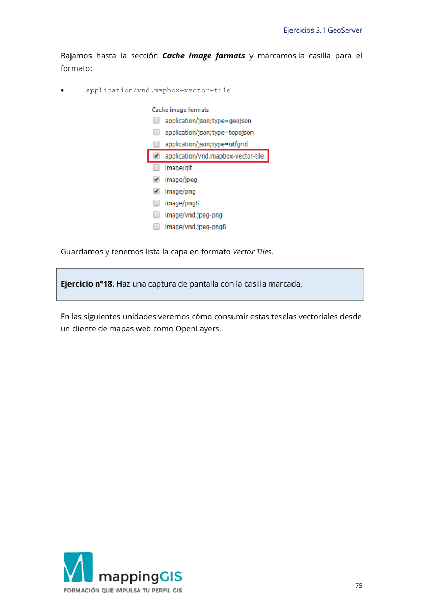